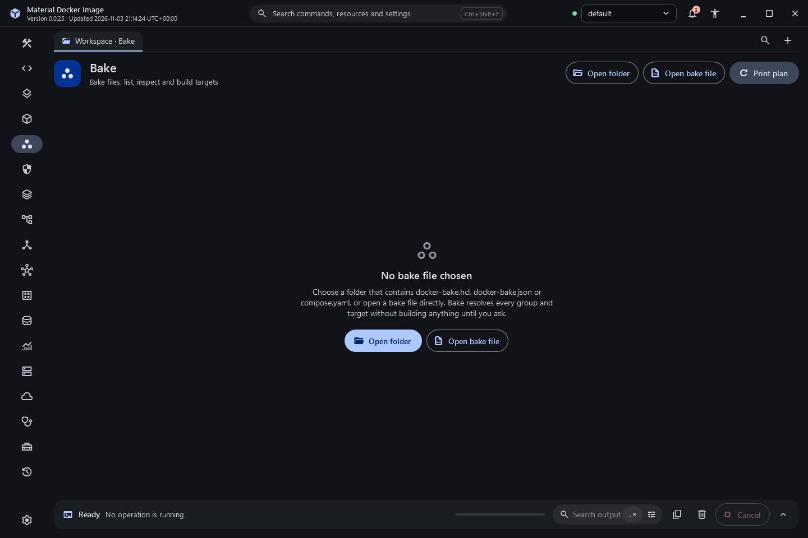
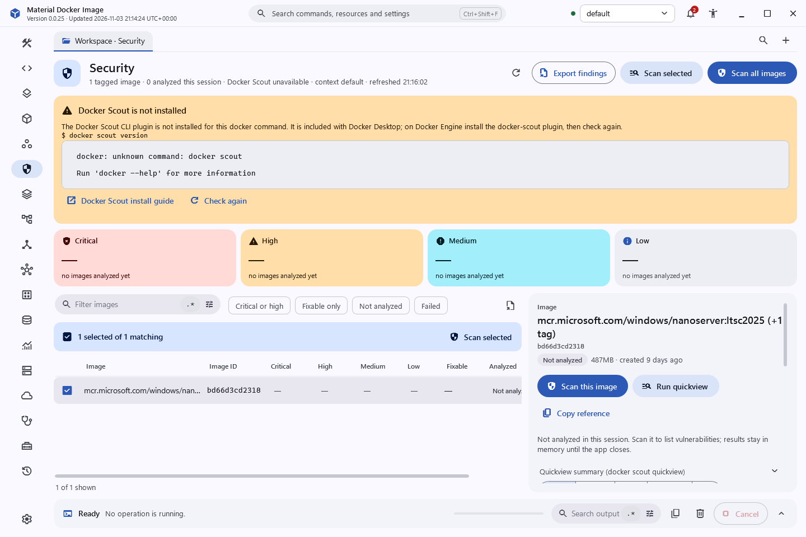
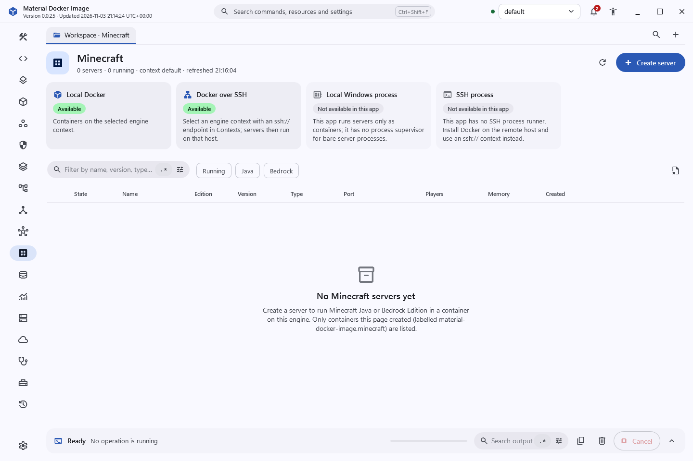

Configure a build, inspect its result, and run it with deliberate ports, mounts and resource limits. Start with the task you need.
Development in progress · Release verification pending
Documentation source version 0.1.0 · updated 2026-11-04T00:00:00Z (time of the latest commit to the rendered sources). The application release version is shown in the download panel when it loads. This documentation does not claim a verified release.
Installers are unsigned and may trigger an unknown-publisher warning. Availability and file names come from the live release list, never from this page.
Feature completion
Maintainer-owned status, backed by the checked-in inventory. Implemented does not mean fully verified. This is separate from your preparation checklist below.
A multi-size application icon (16 to 256 px) generated from the deployed_code Material Symbol is set as the executable icon, the window icon and the Squirrel setup icon. The published executable carries the icon resource. It has not been inspected in the installed shortcut or taskbar.
Remaining actions
Inspect the icon in the installed shortcut, taskbar and Settings app list from the released installer, and capture it from the built application.
The display name (1 to 80 characters, control characters refused) is changed in Settings > About with Save or Enter, and reset to the shipped name Material Docker Image in one action. Each real rename or reset records exactly one local history revision. The title bar and window title follow it; About shows the shipped product name, the diagnostics report keeps it, and the settings and data folders do not move. Interactive verification in the built application is pending.
Remaining actions
Verify rename, reset, restart persistence and the history revision count interactively in the built application in every language mode and theme.
Front ProvenanceImplemented, verification pendingfront-provenance
The documentation home page states its source version (the application project version) and an update time taken from the latest commit that touched the rendered sources, stored in website/provenance.json and bound by the manifest. The running application release version appears in the download panel when it loads.
Remaining actions
Verify the stamp on the deployed page after the next documentation change, and decide whether the in-application front screen needs its own provenance verification record.
The home page download panel looks up the latest release when viewed and lists version, UTC date, Setup.exe, the build companion, the offline documentation archive and every attached file with sizes. Offline, rate-limited, missing-release and unreadable-reply states fall back to the releases page without inventing a version. Parsing and every failure state are covered by focused checks and one headless browser run against the live release list.
Remaining actions
Verify the deployed home page on the live site, on a phone-width screen, in each language mode and with a release that carries every named asset; confirm keyboard use and the rate-limited path against the real service.
Logo CustomizationImplemented, verification pendinglogo-customization
Settings > Appearance chooses the title-bar logo: the default glyph, any bundled Material Symbol by name, or a local PNG, ICO or JPG (up to 1 MiB, signature checked, copied into the app data folder, never uploaded), with reset, persistence, a notice when the file is missing or invalid, and one local history revision per change. Crop, fit and background editing, scheduled settings and appearance export of the logo are not built.
Remaining actions
Verify the picker interactively in the built application at every language mode, theme and display scale; add crop, fit and background editing, scheduled settings and appearance export, and capture the real selected logo.
build/package-docs.ps1 produces MaterialDockerImageDocs.zip: the complete embedded corpus as an offline site with no remote asset and no release lookup, bound to the source by a receipt. The release workflow attaches it and reads it back. The renderer, link and no-remote-asset checks pass; the script was run locally and produced an archive of 31 files.
Remaining actions
Run the packaging in the hosted release workflow, download the attached archive from a real release and open it from a file location in a browser; the interactive offline experience and the other portable documentation duties (the full wiki) remain unverified.
Shared Link EmbedImplemented, verification pendingshared-link-embed
The page head carries Open Graph and Twitter card metadata pointing at a committed 1200 x 630 preview image composed from a real capture of the built application by scripts/make-social-preview.mjs. Metadata, image dimensions and manifest hash are checked.
Remaining actions
Confirm how real platforms render a shared link to the deployed site (platform crawlers were not exercised) and refresh the preview image when the application is redesigned.
23 core checks passed for argument separation, output bounds, cancellation and parsing.
Remaining actions
Complete the remaining workflow combinations and independent acceptance described in the source reference. Existing bounded evidence does not establish full verification.
Multiple tags, labels, target/platform selection, local load, registry push, OCI archive, cache import/export and secret-file rows implemented. Real native build at f370d66 verified exact label whitespace. OCI/cache/secret and registry runtime combinations are not all exercised.
Remaining actions
Complete the remaining workflow combinations and independent acceptance described in the source reference. Existing bounded evidence does not establish full verification.
Run editorImplemented, verification pendingworkflow-run-editor
Explicit JSON argv, non-secret environment, entrypoint/user/workdir, CPU/memory, restart policy and additional port/mount rows implemented. Real native run at f370d66 verified exact environment whitespace. GPU, devices, health-check configuration and interactive terminals remain gaps.
Remaining actions
Complete the remaining workflow combinations and independent acceptance described in the source reference. Existing bounded evidence does not establish full verification.
Stage graph/object selection, inspector, supported alias/base edits, target selection, source navigation, zoom/pan/fit and inspected runtime memberships implemented. 51 UI-state/parser checks passed. Graph rendering is not proof of every interaction or Dockerfile construct.
Remaining actions
Complete the remaining workflow combinations and independent acceptance described in the source reference. Existing bounded evidence does not establish full verification.
Complete the remaining workflow combinations and independent acceptance described in the source reference. Existing bounded evidence does not establish full verification.
Source 3ce1ed7 local 0.5.0 build/installer production and actual restart restoration passed, preserving the absolute example folder and exact source after line-ending normalization. Included in verified normal v0.5.1 at ad5d3ac. Original capture provenance remains 3ce1ed7/0.5.0.
Remaining actions
Complete the remaining workflow combinations and independent acceptance described in the source reference. Existing bounded evidence does not establish full verification.
Package and releaseImplemented, verification pendingworkflow-package-release
Normal v0.5.1 at ad5d3ac5c02588e8efcc926715119b87a9c7c6d5 was verified through successful run 39112649034, exact tag source and five asset sizes/digests.
Remaining actions
Complete the remaining workflow combinations and independent acceptance described in the source reference. Existing bounded evidence does not establish full verification.
Installed update and setupImplemented, verification pendingworkflow-installed-setup
Existing installation updated through Update.exe to 0.5.1.0; executable matched the published package and settings were preserved. Installed hidden launch detected Docker, exercised Setup Back/Next/Finish, persisted completion at step 2 and displayed productive Build. Fresh install, update-ready banner, cancellation and uninstall acceptance remain open.
Remaining actions
Complete the remaining workflow combinations and independent acceptance described in the source reference. Existing bounded evidence does not establish full verification.
Current native capturesImplemented, verification pendingworkflow-native-captures
English, dark, 100% scaling at normal/minimum sizes only. README captures are retained and inspected for 3ce1ed7 local 0.5.0: Build 1440x960, populated Canvas 1440x960 and 960x720. Minimum graph panning and inspector scrolling are intentional. Full matrix is incomplete.
Remaining actions
Complete the remaining workflow combinations and independent acceptance described in the source reference. Existing bounded evidence does not establish full verification.
Documentation and companionsImplemented, verification pendingworkflow-documentation-companions
Deployment 39112649029 for ad5d3ac delivered 12 articles, 109 neutral identifiers and three byte-identical PNGs. 1440/320 widths had no horizontal overflow; guide/checklist/theme/bilingual persistence and exact About homepage passed. Complete documentation/wiki acceptance and portable documentation/build companions remain incomplete.
Remaining actions
Complete the remaining workflow combinations and independent acceptance described in the source reference. Existing bounded evidence does not establish full verification.
Source-controlled status, filters, bilingual details and generated summaries are implemented. Twelve browser width/language/theme tuples, keyboard disclosure and preparation persistence passed at the recorded candidate.
Remaining actions
Complete the capture-promotion and cleanup receipt. Isolated profile removal was rejected, so captures remain retained privately. Verify each later deployment separately; full accessibility and higher physical scales remain outside the bounded evidence.
Container health checksImplemented, verification pendingcontainer-health-checks
The run editor builds --health-cmd, --health-interval, --health-timeout, --health-retries, --health-start-period, --health-start-interval and --no-healthcheck with structured validation, and the Containers inspector shows live health status, failing streak, configured timings and recent probe output. Argument behaviour and inspect parsing were checked against a real local engine.
Remaining actions
Exercise the editor fields and the live inspector refresh in the built WPF application, bound to the exact source commit and artifact hash, with captures; no GUI interaction was performed yet.
The run editor builds --device host:container:permissions rows (permissions limited to a non-repeating subset of rwm, duplicate container paths refused) and --device-cgroup-rule entries, and the Containers inspector lists configured devices and rules. Argument behaviour was checked against a real local engine.
Remaining actions
Exercise the device rows and cgroup rule field in the built WPF application with captures, and test a real host device on a supported engine host; no GUI interaction was performed yet.
The run editor builds --gpus all, a count or device IDs with optional capabilities, and the Containers inspector shows the engine DeviceRequests. When the engine lacks GPU support the editor and inspector explain that honestly. The local engine accepted the requests; use of a physical GPU was not exercised.
Remaining actions
Verify with a GPU-capable engine host that a container really sees the GPU, and exercise the controls in the built WPF application with captures; neither was performed.
Interactive demonstration. Nothing is executed, built, downloaded or published.
The demonstration uses a fixed relative context and no credentials.
Complete documentation, right here
The articles below include the complete checked-in guide text. Source links are optional reference links.
Plain text is the default. Turn on regex to use JavaScript regular-expression syntax on the search text. This bounded local builder covers common constructs and is not RegexBuddy parity.
The Build workspace keeps the Dockerfile editor beside the selected local context. Advanced controls expand in place and use structured Docker CLI arguments.
Outputs
• Load into local engine is the default. This editor accepts one platform for a local load.
• Push to registry accepts multiple tags and platforms and requires confirmation naming the destination tags. Docker retains ownership of registry authentication.
• Export OCI archive writes to a selected local archive path. The parent directory must exist, and replacing an existing archive requires confirmation. Exporter availability depends on the installed builder.
The Image tag field accepts comma-separated or line-separated tags. Labels use one key=value per line. Label keys support namespace punctuation; values retain spaces exactly. The application does not shell-interpret values.
Cache
Cache import and export accept one BuildKit specification per line, such as type=local,src=C:/cache or type=registry,ref=registry.example/team/cache. The installed builder decides which backends it supports. Export is a write operation and requires confirmation. Do not place credentials in these fields.
BuildKit secret files
Add a secret row, choose an existing local file, and enter the identifier used by the Dockerfile's RUN --mount=type=secret instruction. The application passes the selected path to BuildKit without reading or persisting the file's contents. Selections remain in the current window only. The Dockerfile itself must avoid printing secrets or copying them into an image.
Check before building
Check Dockerfile with BuildKit invokes the installed builder's actual --check route against the saved Dockerfile. Unsupported builder versions report their real error. A check is distinct from a successful build, image load, registry publication or container health result.
BuildKit timeline
Builds run with --progress=plain and the output is parsed into a timeline: one row per step with its stage, status (running, cached, done, failed, cancelled), a duration bar scaled to the longest step and the step's own log. Statistics tiles show total time, cached steps, step count and the resulting digest. Click a step to filter the log to it. A failure shows the "failed to solve" summary as a banner.
After a successful build the metadata file is read to show the image digest, config digest, names and attestations, with Run, Push and Copy digest. Recent builds combines this session's builds with docker buildx history ls when the installed Buildx supports it, and says so when it does not.
More options
• Platform chips for common platforms plus any other platform; a local load refuses more than one.
• Mode: Build, Check, Outline (build arguments and secrets the Dockerfile uses) and Targets (stages you can build, with Use as target).
• Export files writes the result to a local folder and asks before writing into a non-empty one.
• Named build contexts, SSH agent forwarding, environment-variable secrets (the value is never read or shown), SBOM and provenance attestations, annotations, RUN network mode (host needs the network.host entitlement), shared memory size, ulimits and extra hosts.
• A live command preview with copy shows exactly what will run, or why the input is invalid.
Bake
The Bake destination opens a folder (Bake reads its default files such as docker-bake.hcl and compose.yaml) or a specific file. It lists groups and targets from docker buildx bake --list=targets and the resolved definition of each from --print. Select targets or a group, add --set overrides, choose Load, Push or the file's own outputs, and build with the same timeline as Build. Push asks first; Load refuses multi-platform targets unless you override the platform.

Limits and verification
Input validation has focused regression coverage. Successful local builds have been exercised separately from remote registry, cache-backend and multi-architecture acceptance. Those latter paths remain capability-dependent and are not inferred from a local build.
Settings > Appearance opens the appearance editor with a live preview. Every change applies immediately, is saved, and is recorded in local history; Undo and Redo keep the last 100 changes.
• Presets: seven built-in presets plus your own. Apply, save as, rename, delete, export to a file and import from one (validated, 64 KiB limit, unknown fields rejected), and copy or paste a style.
• Colour: theme (light, dark, system), seed colour, chroma, surface tint and per-role overrides. The colour picker has a saturation and value field usable with the keyboard, hue and alpha sliders, and editable values in HEX, RGB, HSL, HSV, HWB, CMYK, OKLab and OKLCH with copy buttons. Contrast badges show the WCAG ratio against each role's partner; colours outside sRGB are brought back into range with a warning.
• Shape and density: corner radius scale and density, which change buttons, fields, chips, menus, cards and dialogs.
• Typography: interface and code fonts from a searchable list of installed fonts, each drawn in its own font, plus heading weight.
• Effects: elevation strength and an optional rainbow accent that settles on the saved colour when motion is off.
Each setting has its own reset button. Right-click the app name, any rail item or the page area and choose Edit appearance, or press Ctrl+Shift+E, to open a floating panel for the element under focus: it finds the colour roles that element uses and edits them in place.
Motion
Motion follows Material 3 easing and duration tokens. Choose Off, Reduced, Standard or Expressive and a speed from 0.5x to 2x.
• Moving between rail destinations slides in the direction of the rail; other page changes fade through. Tabs slide.
• Dialogs grow in over a fading scrim, notifications slide in and fade out, and the output panel animates its height.
• The rail indicator grows from its centre, buttons respond to presses, switches slide and expanders reveal their content.
• Table rows fade in on first load.
Reduced motion, Low stimulation, the Windows animation setting and capture mode always win over the saved level. Every animation ends on the element's normal state, so an interrupted animation never leaves anything hidden or moved.
Language
English, Cantonese and Bilingual modes cover the shell and every destination page: headers and subtitles, section titles, field labels and helper text, buttons and menu items, empty states, dialog titles and bodies, tooltips, accessible names, status lines and notifications. Cantonese is written Hong Kong style in Traditional characters; Docker terms such as Compose, BuildKit, Dockerfile and image digest stay in English where that reads naturally. Bilingual shows the English text first, then the Cantonese text after a middle dot.
• The phrase list lives in Services/Loc.cs (shell labels) and Services/LocStrings.*.cs (page copy). Entries whose key contains {0}, {1} and so on are sentence templates: the numbers, names and paths in the English message stay exactly as the engine or the app produced them, and only the wording around them is translated.
• Status lines under page titles are translated phrase by phrase (Loc.Line), so counts, context names and times stay literal.
• Docker CLI output, engine data (image, container, volume and network names, tags, digests, log lines) and error text returned by Docker are shown as returned and are never translated. A few long explanations built from several fragments, or from conditional wording that does not form one fixed sentence, are still English in every mode; School mode forces English everywhere.
• Personal wording files still win over the built-in Cantonese. Clearing them restores the built-in text.
Application icon, title-bar logo and display name
• Application icon: a multi-size icon (16, 20, 24, 32, 40, 48, 64, 128 and 256 px) is set as the executable icon, the window icon and the Squirrel setup icon. It is the deployed_code Material Symbol drawn in the seed colour on a dark rounded tile. build/make-icon.py regenerates Assets/Icon/app.ico and app-256.png from the bundled font; the outputs are committed, so a normal build does not need Python.
• Title-bar logo: Settings > Appearance > Title-bar logo chooses the default glyph, any bundled Material Symbol by name (case, spaces and underscores ignored, with clickable suggestions), or a local PNG, ICO or JPG. A custom image is checked by its actual bytes (extension and signature must agree), limited to 1 MiB and 2048 by 2048 pixels, copied into the logo folder of the app data folder and never uploaded. Use default logo resets it and deletes the copy. A missing or damaged file, or an unknown symbol, shows the default logo with a notice. Each change is saved at once and recorded as one local history revision. The logo changes presentation only: the package id, executable name, data folders and update feed are untouched.
• Display name: Settings > About > Display name accepts 1 to 80 characters without control characters. Save or Enter applies it to the title bar and window title; Reset returns the shipped name Material Docker Image in one action. A rename or reset that really changes the name records exactly one local history revision; saving the same name records nothing. About shows the shipped product name and the diagnostics report keeps it, so a renamed copy is still identifiable. The settings, history and logo folders do not move.
Not built yet: crop, fit and background editing for a custom logo, scheduled settings and appearance export of the logo. Status: covered by UI-state checks for name and logo validation, stored-file handling and fallback; interactive verification in the built window and the installed shortcut icon are pending.
Status
Built and covered by UI-state checks for colour conversions, contrast, presets, import validation and undo. The animations, templates and floating panel have not yet been exercised interactively on Windows.
Choose a context folder and Dockerfile in the Build workspace. Review the document before running it: Dockerfile instructions can execute commands in the selected build environment. Choose an image tag, optional target stage, platform, build arguments, and cache behavior. The selected Docker context applies to each command without changing the user's global selection.
Start the build and inspect the streamed output. A successful exit reports command completion; inspect the resulting image before treating a mutable tag as a particular immutable result. Cancellation terminates the local CLI process, and engine-side state must be refreshed before retrying.
Run an image
Choose an image, configure the container name, ports, environment, mounts, network, restart behavior, and resource limits exposed by the Run editor. Review writable host mounts carefully. Start the container, then inspect its state and logs. A created container is not necessarily a healthy service.
Compose
Open a Compose file, review or edit it, and validate the resolved configuration before starting services. Down removes the project's service containers. Persistent volume deletion must be a separate explicit choice.
Troubleshooting
An unavailable engine, missing build context, invalid tag, unsupported platform, or failing build step produces a real unsuccessful result. Correct the reported cause, refresh engine state, and retry. Keep protected values out of build arguments and use Docker-supported secret routes when available.
MaterialDockerImageBuild.exe is a small, separate Windows window for people who prefer a button to a command prompt. It does not replace build.bat or build-installer.bat; it runs them. Every release attaches it beside the installer.
What it does
• Finds the repository. It uses --repo <path> when given, otherwise walks up from its own folder looking for build.bat, otherwise asks you to choose the folder. A --repo path that is relative, contains characters cmd.exe would interpret (", %, ^, !, <, >, |) or has no build.bat is refused.
• Setup check. Lists build.bat, build-installer.bat, download-dependencies.bat, .tools/dotnet-path.txt, .tools/node-path.txt and out/publish/MaterialDockerImage.exe. The three batch files are required. The two .tools files are created by the first build: the batch files download and verify the pinned .NET SDK and Node.js themselves (see build/dependencies.json), without administrator rights. The companion only reports and explains this; it never elevates and never installs anything itself.
• Build. Runs the repository's build.bat, with -Version x.y.z when a version is entered.
• Build and run. Runs build.bat, then starts out/publish/MaterialDockerImage.exe only if the build exited with code 0 and the file exists.
• Build installer. Runs build-installer.bat -Version x.y.z. The version is required. The installer is unsigned, so Windows may show an unknown-publisher warning.
• Live progress. Standard output and standard error stream into the log view while the build runs (standard error lines are prefixed [err]). A phase label (starting, preparing dependencies, compiling and publishing, packaging installer) is inferred from the output text and is a hint only; the progress bar is indeterminate while running.
• Real result. The window shows elapsed time, the real exit code and a state chip: Succeeded, Failed, Cancelled or Could not start. Success is reported only for exit code 0 without cancellation.
• Cancel (button or Esc) kills the whole process tree. Copy log (button or Ctrl+Shift+C) copies the complete log.
• Language. The language button cycles English, Cantonese and bilingual labels from a small local string table. Build output stays as the tools print it.
Keyboard: Ctrl+B build, Ctrl+R build and run, Ctrl+I installer, Esc cancel, Ctrl+Shift+C copy log. Every control has an automation name; the version field has help text; the state chip is a polite live region.
How commands are run
Each batch file is started as cmd.exe /d /c ""<repo>\build.bat" -Version 1.2.3" with the repository as the working directory. The version must match ^\d+\.\d+\.\d+$ (ASCII digits only, no trailing text). Nothing the user types reaches a command line unvalidated. The logic lives in src/BuildCompanion/Logic/ (BuildPlan, ArgumentValidation, BuildRunner, RunStates, PhaseTracker, RepoLocator, SetupCheck, CompanionStrings) and has no WPF dependency, so the UI-state test project compiles it directly.
| out/publish/MaterialDockerImage.exe missing after Build and run | Could not start (never success) |
| Cancelled | Cancelled, process tree killed |
| Invalid version | Field error; the installer button stays disabled; nothing is run |
| Missing build.bat family | Setup check shows them missing; actions disabled |
| Clipboard unavailable | Message shown; log is unchanged |
Appearance
Material 3 dark theme with the same colour roles and button shapes as the main application (src/BuildCompanion/Theme.xaml mirrors the role keys of src/MaterialDockerImage/Themes/Material.xaml; the Material Symbols font file is linked from the main project, not copied). There is no light theme or appearance editor in the companion.
Packaging
build/publish-companion.ps1 [-Version x.y.z] publishes src/BuildCompanion as a self-contained, single-file win-x64 executable to out/companion/MaterialDockerImageBuild.exe, refuses any extra output file, rebinds the source inventory and writes out/receipts/companion.json (source, version, SHA-256, size). build-installer.bat runs it after packaging and copies the executable and receipt into out/releases, so the release workflow uploads both. The workflow verifies that both appear in the published release assets and that the receipt source equals the workflow commit.
Verification
• build.bat -Tests runs the companion checks inside the UI-state suite: version validation (including Unicode digits, trailing newline and injected text), exact argument building for all three actions, unsafe repository paths, exit-code-to-state mapping, repository discovery, string table completeness, and real runs of a stand-in build.bat through the companion's own cmd.exe /c route (stdout and stderr streaming, exit 0, exit 7, missing application, and cancellation of a running tree).
• build/publish-companion.ps1 produced the single-file executable and receipt.
• Not yet verified: interactive use of the window (clicking each action, the folder picker, copy log, language cycling, keyboard shortcuts), a real end-to-end build.bat run driven from the window, screen-reader behaviour, and behaviour at other display scales. No window was opened during development of this feature.
The Canvas workspace provides a visual view of Dockerfile stages and runtime container relationships. Pan and zoom to inspect larger graphs, select a node to see its details, and return to the source editor for syntax that the current parser cannot safely round-trip.
Stage edges represent parsed dependencies such as FROM and COPY --from. A dependency graph is an explanation of configuration, not proof that a build has run. Runtime nodes come from a refreshed engine inventory and may become stale when an external tool changes containers or networks.
The editor must preserve unsupported instructions. A partial parser must not silently rewrite a complete Dockerfile or invent a dependency for an unresolved expression. Save only intentional changes and review the resulting text.
Verification status
Implementation and built interaction evidence are tracked separately in the capability inventory. Graph rendering alone does not prove drag, zoom, editing, or synchronization behavior.
Implemented controls, focused checks, real native execution and complete acceptance are separate states. The productive application is native WPF. All 109 required identifiers below remain retained. No row claims complete acceptance from a partial workflow.
Product workflows
| Workflow | Implemented behavior and bounded evidence |
| --- | --- |
| Structured Docker execution | 23 core checks passed for argument separation, output bounds, cancellation and parsing. |
| Build workspace | Multiple tags, labels, target/platform selection, local load, registry push, OCI archive, cache import/export and secret-file rows implemented. Real native build at f370d66 verified exact label whitespace. OCI/cache/secret and registry runtime combinations are not all exercised. |
| Run editor | Explicit JSON argv, non-secret environment, entrypoint/user/workdir, CPU/memory, restart policy and additional port/mount rows implemented. Real native run at f370d66 verified exact environment whitespace. GPU, devices, health-check configuration and interactive terminals remain gaps. |
| Native Canvas | Stage graph/object selection, inspector, supported alias/base edits, target selection, source navigation, zoom/pan/fit and inspected runtime memberships implemented. 51 UI-state/parser checks passed. Graph rendering is not proof of every interaction or Dockerfile construct. |
| Images, resources and Compose | Image/container/volume/network operations and loaded Compose save-path/context protection implemented. Complete workflow acceptance remains open. |
| Restart restoration | Source 3ce1ed7 local 0.5.0 build/installer production and actual restart restoration passed, preserving the absolute example folder and exact source after line-ending normalization. Included in verified normal v0.5.1 at ad5d3ac. Original capture provenance remains 3ce1ed7/0.5.0. |
| Package and release | Normal v0.5.1 at ad5d3ac5c02588e8efcc926715119b87a9c7c6d5 was verified through successful run 39112649034, exact tag source and five asset sizes/digests. |
| Documentation site delivery | Download panel with live release lookup, link-preview metadata with a real 1200 x 630 capture, front provenance, site-wide search with a bounded regex builder and an offline documentation archive implemented. Checked by focused checks and one headless browser run; deployed-site and first-release evidence pending. See documentation-site.md. |
| Installed update and setup | Existing installation updated through Update.exe to 0.5.1.0; executable matched the published package and settings were preserved. Installed hidden launch detected Docker, exercised Setup Back/Next/Finish, persisted completion at step 2 and displayed productive Build. Fresh install, update-ready banner, cancellation and uninstall acceptance remain open. |
| Current native captures | English, dark, 100% scaling at normal/minimum sizes only. README captures are retained and inspected for 3ce1ed7 local 0.5.0: Build 1440x960, populated Canvas 1440x960 and 960x720. Minimum graph panning and inspector scrolling are intentional. Full matrix is incomplete. |
| Documentation and companions | Deployment 39112649029 for ad5d3ac delivered 12 articles, 109 neutral identifiers and three byte-identical PNGs. 1440/320 widths had no horizontal overflow; guide/checklist/theme/bilingual persistence and exact About homepage passed. Complete documentation/wiki acceptance and portable documentation/build companions remain incomplete. |
Required-feature inventory
<!-- Generated from website/feature-inventory.json by website/render.mjs. -->
| Identifier | Capability | Status | Remaining actions |
| --- | --- | --- | --- |
| accessibility-sizing | Accessibility Sizing | Unverified | Confirm implementation, documentation, localization, persistence where applicable, focused regression checks and source-bound interaction evidence for accessibility-sizing. |
| adhd-modes | Adhd Modes | Unverified | Confirm implementation, documentation, localization, persistence where applicable, focused regression checks and source-bound interaction evidence for adhd-modes. |
| app-icon | App Icon | Implemented, verification pending | Inspect the icon in the installed shortcut, taskbar and Settings app list from the released installer, and capture it from the built application. |
| appearance-editor | Appearance Editor | Unverified | Confirm implementation, documentation, localization, persistence where applicable, focused regression checks and source-bound interaction evidence for appearance-editor. |
| blank-editors | Blank Editors | Unverified | Confirm implementation, documentation, localization, persistence where applicable, focused regression checks and source-bound interaction evidence for blank-editors. |
| changelog | Changelog | Unverified | Confirm implementation, documentation, localization, persistence where applicable, focused regression checks and source-bound interaction evidence for changelog. |
| layout-overflow-matrix | Layout Overflow Matrix | Unverified | Confirm implementation, documentation, localization, persistence where applicable, focused regression checks and source-bound interaction evidence for layout-overflow-matrix. |
| color-picker | Color Picker | Unverified | Confirm implementation, documentation, localization, persistence where applicable, focused regression checks and source-bound interaction evidence for color-picker. |
| mobile-website | Mobile Website | Unverified | Confirm implementation, documentation, localization, persistence where applicable, focused regression checks and source-bound interaction evidence for mobile-website. |
| dim-sum | Dim Sum | Unverified | Confirm implementation, documentation, localization, persistence where applicable, focused regression checks and source-bound interaction evidence for dim-sum. |
| dim-sum-code-names | Dim Sum Code Names | Unverified | Confirm implementation, documentation, localization, persistence where applicable, focused regression checks and source-bound interaction evidence for dim-sum-code-names. |
| dim-sum-photo-source | Dim Sum Photo Source | Unverified | Confirm implementation, documentation, localization, persistence where applicable, focused regression checks and source-bound interaction evidence for dim-sum-photo-source. |
| display-name | Display Name | Implemented, verification pending | Verify rename, reset, restart persistence and the history revision count interactively in the built application in every language mode and theme. |
| front-provenance | Front Provenance | Implemented, verification pending | Verify the stamp on the deployed page after the next documentation change, and decide whether the in-application front screen needs its own provenance verification record. |
| functional-ui | Functional Ui | Unverified | Confirm implementation, documentation, localization, persistence where applicable, focused regression checks and source-bound interaction evidence for functional-ui. |
| funny-emoji | Funny Emoji | Unverified | Confirm implementation, documentation, localization, persistence where applicable, focused regression checks and source-bound interaction evidence for funny-emoji. |
| guided-forms | Guided Forms | Unverified | Confirm implementation, documentation, localization, persistence where applicable, focused regression checks and source-bound interaction evidence for guided-forms. |
| honest-monetization | Honest Monetization | Unverified | Confirm implementation, documentation, localization, persistence where applicable, focused regression checks and source-bound interaction evidence for honest-monetization. |
| human-time-estimate | Human Time Estimate | Unverified | Confirm implementation, documentation, localization, persistence where applicable, focused regression checks and source-bound interaction evidence for human-time-estimate. |
| info-icon-guidance | Info Icon Guidance | Unverified | Confirm implementation, documentation, localization, persistence where applicable, focused regression checks and source-bound interaction evidence for info-icon-guidance. |
| language | Language | Unverified | Confirm implementation, documentation, localization, persistence where applicable, focused regression checks and source-bound interaction evidence for language. |
| logo-customization | Logo Customization | Implemented, verification pending | Verify the picker interactively in the built application at every language mode, theme and display scale; add crop, fit and background editing, scheduled settings and appearance export, and capture the real selected logo. |
| material-design | Material Design | Unverified | Confirm implementation, documentation, localization, persistence where applicable, focused regression checks and source-bound interaction evidence for material-design. |
| motion | Motion | Unverified | Confirm implementation, documentation, localization, persistence where applicable, focused regression checks and source-bound interaction evidence for motion. |
| narration | Narration | Unverified | Confirm implementation, documentation, localization, persistence where applicable, focused regression checks and source-bound interaction evidence for narration. |
| notifications | Notifications | Unverified | Confirm implementation, documentation, localization, persistence where applicable, focused regression checks and source-bound interaction evidence for notifications. |
| onboarding-wizard | Onboarding Wizard | Unverified | Confirm implementation, documentation, localization, persistence where applicable, focused regression checks and source-bound interaction evidence for onboarding-wizard. |
| operational-skill | Operational Skill | Unverified | Confirm implementation, documentation, localization, persistence where applicable, focused regression checks and source-bound interaction evidence for operational-skill. |
| overlay-panels | Overlay Panels | Unverified | Confirm implementation, documentation, localization, persistence where applicable, focused regression checks and source-bound interaction evidence for overlay-panels. |
| rendered-provider-text | Rendered Provider Text | Unverified | Confirm implementation, documentation, localization, persistence where applicable, focused regression checks and source-bound interaction evidence for rendered-provider-text. |
| rich-controls | Rich Controls | Unverified | Confirm implementation, documentation, localization, persistence where applicable, focused regression checks and source-bound interaction evidence for rich-controls. |
| sanitized-instruction-copy | Sanitized Instruction Copy | Unverified | Confirm implementation, documentation, localization, persistence where applicable, focused regression checks and source-bound interaction evidence for sanitized-instruction-copy. |
| scheduled-settings | Scheduled Settings | Unverified | Confirm implementation, documentation, localization, persistence where applicable, focused regression checks and source-bound interaction evidence for scheduled-settings. |
| screen-recording | Screen Recording | Unverified | Confirm implementation, documentation, localization, persistence where applicable, focused regression checks and source-bound interaction evidence for screen-recording. |
| settings-explanations | Settings Explanations | Unverified | Confirm implementation, documentation, localization, persistence where applicable, focused regression checks and source-bound interaction evidence for settings-explanations. |
| shared-link-embed | Shared Link Embed | Implemented, verification pending | Confirm how real platforms render a shared link to the deployed site (platform crawlers were not exercised) and refresh the preview image when the application is redesigned. |
| support-tickets | Support Tickets | Unverified | Confirm implementation, documentation, localization, persistence where applicable, focused regression checks and source-bound interaction evidence for support-tickets. |
| vendored-fonts | Vendored Fonts | Unverified | Confirm implementation, documentation, localization, persistence where applicable, focused regression checks and source-bound interaction evidence for vendored-fonts. |
Navigation and workflow
| Identifier | Capability | Status | Remaining actions |
| --- | --- | --- | --- |
| bulk-actions | Bulk Actions | Unverified | Confirm implementation, documentation, localization, persistence where applicable, focused regression checks and source-bound interaction evidence for bulk-actions. |
| collapse-filters | Collapse Filters | Unverified | Confirm implementation, documentation, localization, persistence where applicable, focused regression checks and source-bound interaction evidence for collapse-filters. |
| command-palette | Command Palette | Unverified | Confirm implementation, documentation, localization, persistence where applicable, focused regression checks and source-bound interaction evidence for command-palette. |
| context-menus | Context Menus | Unverified | Confirm implementation, documentation, localization, persistence where applicable, focused regression checks and source-bound interaction evidence for context-menus. |
| exports | Exports | Unverified | Confirm implementation, documentation, localization, persistence where applicable, focused regression checks and source-bound interaction evidence for exports. |
| external-editor | External Editor | Unverified | Confirm implementation, documentation, localization, persistence where applicable, focused regression checks and source-bound interaction evidence for external-editor. |
| local-history | Local History | Unverified | Confirm implementation, documentation, localization, persistence where applicable, focused regression checks and source-bound interaction evidence for local-history. |
| menu-shortcuts | Menu Shortcuts | Unverified | Confirm implementation, documentation, localization, persistence where applicable, focused regression checks and source-bound interaction evidence for menu-shortcuts. |
| progress-recovery | Progress Recovery | Unverified | Confirm implementation, documentation, localization, persistence where applicable, focused regression checks and source-bound interaction evidence for progress-recovery. |
| regex-search | Regex Search | Unverified | Confirm implementation, documentation, localization, persistence where applicable, focused regression checks and source-bound interaction evidence for regex-search. |
| tabs | Tabs | Unverified | Confirm implementation, documentation, localization, persistence where applicable, focused regression checks and source-bound interaction evidence for tabs. |
| workflow-navigation | Workflow Navigation | Unverified | Confirm implementation, documentation, localization, persistence where applicable, focused regression checks and source-bound interaction evidence for workflow-navigation. |
Safety and privacy
| Identifier | Capability | Status | Remaining actions |
| --- | --- | --- | --- |
| private-conversation-discipline | Private Conversation Discipline | Unverified | Confirm implementation, documentation, localization, persistence where applicable, focused regression checks and source-bound interaction evidence for private-conversation-discipline. |
| authenticator | Authenticator | Unverified | Confirm implementation, documentation, localization, persistence where applicable, focused regression checks and source-bound interaction evidence for authenticator. |
| element-locks | Element Locks | Unverified | Confirm implementation, documentation, localization, persistence where applicable, focused regression checks and source-bound interaction evidence for element-locks. |
| personal-vocabulary | Personal Vocabulary | Unverified | Confirm implementation, documentation, localization, persistence where applicable, focused regression checks and source-bound interaction evidence for personal-vocabulary. |
| school-mode | School Mode | Unverified | Confirm implementation, documentation, localization, persistence where applicable, focused regression checks and source-bound interaction evidence for school-mode. |
| self-signing | Self Signing | Unverified | Confirm implementation, documentation, localization, persistence where applicable, focused regression checks and source-bound interaction evidence for self-signing. |
| super-confirmation | Super Confirmation | Unverified | Confirm implementation, documentation, localization, persistence where applicable, focused regression checks and source-bound interaction evidence for super-confirmation. |
| unlock-ladder | Unlock Ladder | Unverified | Confirm implementation, documentation, localization, persistence where applicable, focused regression checks and source-bound interaction evidence for unlock-ladder. |
| vocabulary-drop-apply | Vocabulary Drop Apply | Unverified | Confirm implementation, documentation, localization, persistence where applicable, focused regression checks and source-bound interaction evidence for vocabulary-drop-apply. |
| vocabulary-hash-lock | Vocabulary Hash Lock | Unverified | Confirm implementation, documentation, localization, persistence where applicable, focused regression checks and source-bound interaction evidence for vocabulary-hash-lock. |
| vocabulary-unlock-boundary | Vocabulary Unlock Boundary | Unverified | Confirm implementation, documentation, localization, persistence where applicable, focused regression checks and source-bound interaction evidence for vocabulary-unlock-boundary. |
Build and delivery
| Identifier | Capability | Status | Remaining actions |
| --- | --- | --- | --- |
| auto-updates | Auto Updates | Unverified | Confirm implementation, documentation, localization, persistence where applicable, focused regression checks and source-bound interaction evidence for auto-updates. |
| build-entrypoints | Build Entrypoints | Unverified | Confirm implementation, documentation, localization, persistence where applicable, focused regression checks and source-bound interaction evidence for build-entrypoints. |
| bundled-dependencies | Bundled Dependencies | Unverified | Confirm implementation, documentation, localization, persistence where applicable, focused regression checks and source-bound interaction evidence for bundled-dependencies. |
| ci-bootstrap | Ci Bootstrap | Unverified | Confirm implementation, documentation, localization, persistence where applicable, focused regression checks and source-bound interaction evidence for ci-bootstrap. |
| dependency-fetcher | Dependency Fetcher | Unverified | Confirm implementation, documentation, localization, persistence where applicable, focused regression checks and source-bound interaction evidence for dependency-fetcher. |
| download-handoff | Download Handoff | Unverified | Confirm implementation, documentation, localization, persistence where applicable, focused regression checks and source-bound interaction evidence for download-handoff. |
| encrypted-public-builder | Encrypted Public Builder | Unverified | Confirm implementation, documentation, localization, persistence where applicable, focused regression checks and source-bound interaction evidence for encrypted-public-builder. |
| forge-publishing | Forge Publishing | Unverified | Confirm implementation, documentation, localization, persistence where applicable, focused regression checks and source-bound interaction evidence for forge-publishing. |
| fresh-build-run-command | Fresh Build Run Command | Unverified | Confirm implementation, documentation, localization, persistence where applicable, focused regression checks and source-bound interaction evidence for fresh-build-run-command. |
| installer-download-button | Installer Download Button | Implemented, verification pending | Verify the deployed home page on the live site, on a phone-width screen, in each language mode and with a release that carries every named asset; confirm keyboard use and the rate-limited path against the real service. |
| release-dim-sum-photo | Release Dim Sum Photo | Unverified | Confirm implementation, documentation, localization, persistence where applicable, focused regression checks and source-bound interaction evidence for release-dim-sum-photo. |
| release-line-counts | Release Line Counts | Unverified | Confirm implementation, documentation, localization, persistence where applicable, focused regression checks and source-bound interaction evidence for release-line-counts. |
| release-timing | Release Timing | Unverified | Confirm implementation, documentation, localization, persistence where applicable, focused regression checks and source-bound interaction evidence for release-timing. |
| release-workflow | Release Workflow | Unverified | Confirm implementation, documentation, localization, persistence where applicable, focused regression checks and source-bound interaction evidence for release-workflow. |
| runner-selection | Runner Selection | Unverified | Confirm implementation, documentation, localization, persistence where applicable, focused regression checks and source-bound interaction evidence for runner-selection. |
| squirrel-installer | Squirrel Installer | Unverified | Confirm implementation, documentation, localization, persistence where applicable, focused regression checks and source-bound interaction evidence for squirrel-installer. |
Documentation and evidence
| Identifier | Capability | Status | Remaining actions |
| --- | --- | --- | --- |
| closeout-prompt | Closeout Prompt | Unverified | Confirm implementation, documentation, localization, persistence where applicable, focused regression checks and source-bound interaction evidence for closeout-prompt. |
| completeness-parity | Completeness Parity | Unverified | Confirm implementation, documentation, localization, persistence where applicable, focused regression checks and source-bound interaction evidence for completeness-parity. |
| design-folder | Design Folder | Unverified | Confirm implementation, documentation, localization, persistence where applicable, focused regression checks and source-bound interaction evidence for design-folder. |
| design-reference-parity | Design Reference Parity | Unverified | Confirm implementation, documentation, localization, persistence where applicable, focused regression checks and source-bound interaction evidence for design-reference-parity. |
| discussion-records | Discussion Records | Unverified | Confirm implementation, documentation, localization, persistence where applicable, focused regression checks and source-bound interaction evidence for discussion-records. |
| feature-articles | Feature Articles | Unverified | Confirm implementation, documentation, localization, persistence where applicable, focused regression checks and source-bound interaction evidence for feature-articles. |
| feature-docs | Feature Docs | Unverified | Confirm implementation, documentation, localization, persistence where applicable, focused regression checks and source-bound interaction evidence for feature-docs. |
| handoff-record | Handoff Record | Unverified | Confirm implementation, documentation, localization, persistence where applicable, focused regression checks and source-bound interaction evidence for handoff-record. |
| homepage-link | Homepage Link | Unverified | Confirm implementation, documentation, localization, persistence where applicable, focused regression checks and source-bound interaction evidence for homepage-link. |
| landing-site | Landing Site | Unverified | Confirm implementation, documentation, localization, persistence where applicable, focused regression checks and source-bound interaction evidence for landing-site. |
| offline-docs | Offline Docs | Unverified | Confirm implementation, documentation, localization, persistence where applicable, focused regression checks and source-bound interaction evidence for offline-docs. |
| offline-documentation-companion | Offline Documentation Companion | Implemented, verification pending | Run the packaging in the hosted release workflow, download the attached archive from a real release and open it from a file location in a browser; the interactive offline experience and the other portable documentation duties (the full wiki) remain unverified. |
| product-evidence | Product Evidence | Unverified | Confirm implementation, documentation, localization, persistence where applicable, focused regression checks and source-bound interaction evidence for product-evidence. |
| project-board | Project Board | Unverified | Confirm implementation, documentation, localization, persistence where applicable, focused regression checks and source-bound interaction evidence for project-board. |
| project-profile | Project Profile | Unverified | Confirm implementation, documentation, localization, persistence where applicable, focused regression checks and source-bound interaction evidence for project-profile. |
| public-screenshot-gallery | Public Screenshot Gallery | Unverified | Confirm implementation, documentation, localization, persistence where applicable, focused regression checks and source-bound interaction evidence for public-screenshot-gallery. |
| readme-prompt-banner | Readme Prompt Banner | Unverified | Confirm implementation, documentation, localization, persistence where applicable, focused regression checks and source-bound interaction evidence for readme-prompt-banner. |
| roadmap-checklist | Roadmap Checklist | Unverified | Confirm implementation, documentation, localization, persistence where applicable, focused regression checks and source-bound interaction evidence for roadmap-checklist. |
| tabbed-readme | Tabbed Readme | Unverified | Confirm implementation, documentation, localization, persistence where applicable, focused regression checks and source-bound interaction evidence for tabbed-readme. |
| shared-instruction-portable-editions | Shared Instruction Portable Editions | Unverified | Confirm implementation, documentation, localization, persistence where applicable, focused regression checks and source-bound interaction evidence for shared-instruction-portable-editions. |
| wiki-documentation-sync | Wiki Documentation Sync | Unverified | Confirm implementation, documentation, localization, persistence where applicable, focused regression checks and source-bound interaction evidence for wiki-documentation-sync. |
Tools and integrations
| Identifier | Capability | Status | Remaining actions |
| --- | --- | --- | --- |
| discord-status-bridge | Discord Status Bridge | Unverified | Confirm implementation, documentation, localization, persistence where applicable, focused regression checks and source-bound interaction evidence for discord-status-bridge. |
| file-converter | File Converter | Unverified | Confirm implementation, documentation, localization, persistence where applicable, focused regression checks and source-bound interaction evidence for file-converter. |
| minecraft-server-manager | Minecraft Server Manager | Unverified | Confirm implementation, documentation, localization, persistence where applicable, focused regression checks and source-bound interaction evidence for minecraft-server-manager. |
| ollama-suite | Ollama Suite | Unverified | Confirm implementation, documentation, localization, persistence where applicable, focused regression checks and source-bound interaction evidence for ollama-suite. |
| panic-webhooks | Panic Webhooks | Unverified | Confirm implementation, documentation, localization, persistence where applicable, focused regression checks and source-bound interaction evidence for panic-webhooks. |
| postman-collections | Postman Collections | Unverified | Confirm implementation, documentation, localization, persistence where applicable, focused regression checks and source-bound interaction evidence for postman-collections. |
| qr-pairing | Qr Pairing | Unverified | Confirm implementation, documentation, localization, persistence where applicable, focused regression checks and source-bound interaction evidence for qr-pairing. |
| roblox-model-catalogue | Roblox Model Catalogue | Unverified | Confirm implementation, documentation, localization, persistence where applicable, focused regression checks and source-bound interaction evidence for roblox-model-catalogue. |
| roblox-visual-realism | Roblox Visual Realism | Unverified | Confirm implementation, documentation, localization, persistence where applicable, focused regression checks and source-bound interaction evidence for roblox-visual-realism. |
| status-hub | Status Hub | Unverified | Confirm implementation, documentation, localization, persistence where applicable, focused regression checks and source-bound interaction evidence for status-hub. |
| tidbyt-displays | Tidbyt Displays | Unverified | Confirm implementation, documentation, localization, persistence where applicable, focused regression checks and source-bound interaction evidence for tidbyt-displays. |
Product workflows
| Identifier | Capability | Status | Remaining actions |
| --- | --- | --- | --- |
| workflow-structured-execution | Structured Docker execution | Implemented, verification pending | Complete the remaining workflow combinations and independent acceptance described in the source reference. Existing bounded evidence does not establish full verification. |
| workflow-build-workspace | Build workspace | Implemented, verification pending | Complete the remaining workflow combinations and independent acceptance described in the source reference. Existing bounded evidence does not establish full verification. |
| workflow-run-editor | Run editor | Implemented, verification pending | Complete the remaining workflow combinations and independent acceptance described in the source reference. Existing bounded evidence does not establish full verification. |
| workflow-native-canvas | Native Canvas | Implemented, verification pending | Complete the remaining workflow combinations and independent acceptance described in the source reference. Existing bounded evidence does not establish full verification. |
| workflow-resource-management | Images, resources and Compose | Implemented, verification pending | Complete the remaining workflow combinations and independent acceptance described in the source reference. Existing bounded evidence does not establish full verification. |
| workflow-restart-restoration | Restart restoration | Implemented, verification pending | Complete the remaining workflow combinations and independent acceptance described in the source reference. Existing bounded evidence does not establish full verification. |
| workflow-package-release | Package and release | Implemented, verification pending | Complete the remaining workflow combinations and independent acceptance described in the source reference. Existing bounded evidence does not establish full verification. |
| workflow-installed-setup | Installed update and setup | Implemented, verification pending | Complete the remaining workflow combinations and independent acceptance described in the source reference. Existing bounded evidence does not establish full verification. |
| workflow-native-captures | Current native captures | Implemented, verification pending | Complete the remaining workflow combinations and independent acceptance described in the source reference. Existing bounded evidence does not establish full verification. |
| workflow-documentation-companions | Documentation and companions | Implemented, verification pending | Complete the remaining workflow combinations and independent acceptance described in the source reference. Existing bounded evidence does not establish full verification. |
Planned milestones
| Identifier | Capability | Status | Remaining actions |
| --- | --- | --- | --- |
| feature-checklist | Feature completion checklist | Implemented, verification pending | Complete the capture-promotion and cleanup receipt. Isolated profile removal was rejected, so captures remain retained privately. Verify each later deployment separately; full accessibility and higher physical scales remain outside the bounded evidence. |
| container-health-checks | Container health checks | Implemented, verification pending | Exercise the editor fields and the live inspector refresh in the built WPF application, bound to the exact source commit and artifact hash, with captures; no GUI interaction was performed yet. |
| container-device-mappings | Container device mappings | Implemented, verification pending | Exercise the device rows and cgroup rule field in the built WPF application with captures, and test a real host device on a supported engine host; no GUI interaction was performed yet. |
| container-gpu-access | Container GPU access | Implemented, verification pending | Verify with a GPU-capable engine host that a container really sees the GPU, and exercise the controls in the built WPF application with captures; neither was performed. |
Known limits
Complete RegexBuddy parity, full localization, protected local wording import, shared school mode, narration, advanced appearance controls, server-management integration, portable documentation/build companions and complete display-scale acceptance are not established. They must not be described as fully delivered behavior. All 109 required rows remain unverified for complete acceptance even where bounded implementation evidence exists above.
Remote engines, alternative architectures, GPU/device/health-check controls and interactive terminals need additional implementation or independent runtime acceptance. A successful local native build/run does not verify these routes. OCI export, registry push, supported cache backends and secret-file builds need their own runtime evidence.
Current native visual scope does not establish Cantonese/bilingual modes, light theme, 125%, 150% or 200% scaling. Normal v0.5.1 at ad5d3ac is the verified delivery baseline and includes the 3ce1ed7 restart fix. Its bounded current-host update/launch/setup proof does not establish fresh-install or full installer/update lifecycle acceptance. The documentation persistence checks do not expand native-language or scale evidence. All 109 neutral identifiers in the inventory remain unverified for complete acceptance.
Select an image from a refreshed inventory, then choose Run. The dialog remains bound to the engine context and generation that produced the selection. A changed context invalidates the selection.
Ports and storage
The basic port field uses host:container, optionally followed by /tcp or /udp, and binds to loopback. Additional port rows expose the bind address, host port, container port and protocol independently. An all-interface address publishes more broadly and must be chosen intentionally.
Additional mount rows distinguish named volumes from bind paths, provide a container destination, and default to read-only. Browse chooses a folder on this computer. A bind source belongs to the selected engine host, which may be remote; the application does not incorrectly require a remote path to exist locally. Confirm that the engine can access any chosen source.
Execution and environment
Command arguments are a JSON string array, for example ["/bin/echo", "hello world"]. Each string remains a separate argument after the image operand. A shell inside a container runs only if explicitly selected as the container executable; the application does not invoke a host shell for Docker operations.
Environment entries use NAME=value, one per line. Everything after the first equals sign is preserved, including trailing spaces. Enter non-secret values only. Entrypoint, container user and working directory can be overridden independently; blank values retain the image behavior where Docker permits it.
Resources and security
CPU and memory limits, restart policy, read-only root filesystem and prevention of new privileges are exposed as real controls. The engine validates their final compatibility with the chosen image and host. Preventing new privileges is enabled in this editor by default and may affect images that rely on set-user-ID behavior.
No privileged mode or host networking is enabled by this dialog. Interactive terminals remain a documented gap; health checks, device mappings and GPU access are described below. Compose remains available for project configuration, but does not constitute acceptance evidence for absent graphical controls.
Health checks, devices and GPUs
Restart and health holds the health-check fields. Each field maps to one flag and is validated before Run is enabled: Health command (--health-cmd, run through the container shell), Interval (--health-interval), Timeout (--health-timeout), Retries (--health-retries, a positive whole number), Start period (--health-start-period), Start interval (--health-start-interval, needs Docker Engine 25 or later) and Disable the image health check (--no-healthcheck). Durations use Go syntax such as 30s, 1m30s or 500ms, must be at least 1ms, and zero is refused. Disabling the check cannot be combined with a command or timing option.
Resources holds GPU and device access. GPUs accepts all, a positive count, or device IDs such as device=0,1, with optional capabilities such as compute and utility; capabilities are always sent as one quoted field because the engine rejects an unquoted list. Device rows map a host path to a container path with permissions that are a non-repeating subset of r, w and m, and two rows cannot claim the same container path. Device cgroup rules take one rule per line, for example c 189:* rwm. Device paths belong to the engine host, which may not be this computer. A warning appears whenever GPUs, devices or rules are set.
The Containers inspector Overview lists the configured health check, the live status, the failing streak and the last probe outputs. While a running container with a health check is open on Overview, the inspector re-reads it every five seconds and redraws only when the status, streak or latest probe changes. Below that, Devices and GPUs lists configured devices, cgroup rules and the engine DeviceRequests. If the engine reports a start error that mentions a missing device driver, the inspector says the engine has no GPU support; a failed Run says the same instead of leaving only the raw engine text.
Verification
A controlled native GUI build/run test verified exact fixture output, a read-only filesystem, disabled networking and owned resource removal. Input regressions cover argument separation, whitespace, IPv4/IPv6 ports, mount-option injection, remote bind paths, CPU/memory validation and supported label keys. Separate engines and resource combinations require their own runtime checks.
Health, device and GPU argument behaviour was also checked with the docker command line against the local Docker Desktop Linux engine (29.6.1); the receipt is evidence/container-controls-2026-11.json. Focused checks cover argument building, validation and parsing of real inspect output. The editor fields, the inspector refresh and a container that actually uses a GPU or host device have not been exercised in the built application, so these three features are implemented with verification pending.
Contexts shows every Docker engine context as a card with its description, endpoint, transport, whether it is the CLI's current context and whether this window uses it. Every context is probed in parallel (ten-second limit) and shows its engine version, platform and API version, or the error.
• Use in this window switches only this window and records the change in local history. The app never runs docker context use.
• Create offers endpoint presets for named pipe, Unix socket, TCP and SSH, TLS certificate pickers and a live command preview.
• Update, Inspect (sanitized), Export (with a warning about key material) and Import are available. Remove asks first and refuses the default context and the one this window uses.
• Plugins lists the CLI plugins, failed plugins and CLI warnings, with search. A note shows where the CLI configuration lives and warns when DOCKER_HOST or DOCKER_CONTEXT is set.
Swarm
Swarm reads the engine's swarm state and shows what fits it.
• Not in a swarm: Init (optional advertise address) and Join (token in a password field) with confirmation.
• Workers, pending or locked nodes: an explanation and Leave. Leave asks first; forced leave needs the super confirmation.
• Managers: a statistics strip and tabs:
- Services: replica chips, a task timeline from docker service ps, logs with follow, scale, update image, rollback, remove and a create form with ports, environment and constraints. Environment values are masked in the preview and never stored.
- Stacks: deploy from a Compose file, list services and remove with a super confirmation listing them.
- Nodes: availability (active, pause, drain), promote, demote and inspect.
- Secrets: create from a typed value sent on standard input or from a file the CLI reads; inspect shows metadata only.
- Configs: create from a file, view decoded content, inspect and remove.
Volume backup, restore and clone
In Storage, a volume can be backed up to a .tar.gz archive with a short-lived helper container that has no network. Containers using the volume can be stopped for the backup and are always started again afterwards. Restore writes an archive into an existing or new volume; replacing current contents needs the super confirmation. Clone copies a volume into a new one without using a host folder, so it also works with remote engines.
Compose tools
Compose projects gain watch (only when a service declares develop.watch; otherwise a worked example explains how), top, images, a live events list, copy files in both directions, one-shot exec, extra environment files and a dry-run switch for Up and Down.
Diagnostics records actual CLI and engine responses. Separate read-only inspection from a smoke test that creates resources. Controlled smoke tests use unique owned names, labels, and exact teardown targets. Failed teardown remains an unsuccessful overall result.
Commands are invoked without a shell. User values become individual process arguments. Docker context selection is per command. Existing Docker credential helpers retain ownership of authentication; credentials must not enter command previews, application logs or diagnostic exports.
Output is bounded to protect memory. A truncated output buffer must be identified as truncated, never described as complete. Cancellation can stop the CLI before the engine has reconciled its work. Refresh state and inspect the resource rather than assuming rollback.
Only run trusted build projects. Docker engine access carries substantial authority over its host. This application does not make an untrusted Dockerfile, image, bind mount or Compose project safe.
The Creator builds a Dockerfile from structured steps, shows the exact text as you work, and checks it against common best practices.
Start
Choose a starter: Node.js service, Python with pip, Python with uv, .NET (ASP.NET), Go static binary, Java (Maven build with a JRE runtime), Rust, static site served by an unprivileged nginx, or Blank. Each starter states what it creates. Applying a starter replaces the current draft; the previous draft is recorded in local history first so it can be restored from Activity. You can also import an existing Dockerfile: instructions become structured steps, and anything the editor cannot represent is kept as a raw card with Edit as text.
The Detected project card inspects a folder like docker init: Node (npm, yarn, pnpm), Python (pip, uv, poetry; FastAPI, Flask, Django), Go, .NET, Rust, Java (Maven, Gradle) and static sites, plus existing Dockerfile, Compose and .dockerignore files. Each finding shows its evidence file. Apply suggestion replaces the draft (the old draft goes to local history first), and Write to folder asks before replacing any file.
Stages
The left column lists the stages. Add, rename, duplicate, delete (with confirmation), reorder, or set a stage as the build target. Each stage has a base image (editable, with common images suggested), a name and an optional platform.
Steps
Each instruction is a card with its keyword, a summary and a hint. Expand a card to edit it with a form specific to its kind:
• ARG, ENV and LABEL as name and value rows.
• COPY with sources, destination, --from stage, --chown, --chmod (numeric or symbolic), --link, --parents, repeated --exclude and an inline file written as a heredoc.
• ADD from a local path, a URL or a Git repository, with --checksum and --keep-git-dir.
• RUN as shell or exec form or as a heredoc script with an interpreter, plus a mounts editor for all five mount types (bind, cache, tmpfs, secret, ssh) with every option, cache presets for apt, npm, pip, uv, Go, Cargo, NuGet, Maven and Gradle, and --network and --security (insecure warns about the entitlement it needs).
• Global build arguments before the first stage, one-click TARGETPLATFORM and BUILDPLATFORM helpers, Build on BUILDPLATFORM for cross-compilation, and the # syntax, # escape and # check directives.
• USER, WORKDIR, EXPOSE (port and protocol), VOLUME, STOPSIGNAL, SHELL, ONBUILD and comments.
• ENTRYPOINT and CMD in exec form with one field per argument.
• HEALTHCHECK with command, interval, timeout, retries and start period.
Fields are validated as you type. Move steps with the arrow buttons or Alt+Up and Alt+Down; duplicate or delete them from the card or its context menu. Add instruction opens a searchable list, and quick-add chips insert a cached RUN, a HEALTHCHECK, a non-root USER or an EXPOSE.
Live, editable source
The source on the right is an editor, not just a preview. Type in it and, 300 ms after you stop (or when it loses focus), the stages and cards are rebuilt from your text without moving the caret or scroll position. Editing a card replaces only that instruction's lines, so your comments, blank lines, spacing and CRLF line endings are kept. Opening a card selects its lines in the source; moving the caret selects the matching stage and outlines its card. Lines the model cannot represent become raw cards with Edit as text, and parse notes appear in Checks with a link to the line. Adding, removing or moving steps and editing directives still re-render the whole file.
The source has search, a coloured read-only view, Copy as build command (docker buildx build with target, entitlements, secret ids and SSH, never secret values), a .dockerignore tab with language presets and a live check against a context folder, and a compose.yaml tab when one is generated.
Checks
The Checks panel reports, among others: an unpinned base image, a final stage that runs as root, no health check, apt-get update without an install in the same step, missing --no-install-recommends or cleanup, ADD used for local files, shell-form CMD or ENTRYPOINT, a web service without EXPOSE, COPY . . before dependency installation, secret-looking ARG or ENV names, duplicate stage names, COPY --from pointing to an unknown or later stage, a relative WORKDIR, and several CMD instructions. Rules DF100 to DF124 add mount, heredoc, platform and syntax-version checks; DF116 offers to add or upgrade the # syntax header when a feature needs a newer Dockerfile frontend. Findings that match a BuildKit check show its name, and # check=skip= hides them here too. Most findings have a Fix button; fixes that need a value (such as a tag or digest to pin) ask for it first.
Saving and building
Undo and Redo keep the last 200 changes. The draft is saved automatically in the application data folder and recorded in local history after two seconds without changes. Save as writes a Dockerfile you choose. Open in Build sends the text to the Build destination as an unsaved draft together with the selected target stage, so you can review it and build.
Screenshots
Captured from the built application (inventory (document unavailable)).
The documentation site is generated by website/render.mjs from website/template.html, the Markdown in docs/ and wiki/, the project overview files and the feature inventory. It is deployed by .github/workflows/pages.yml. This article describes the delivery parts of that site and how each one fails.
Latest release download panel
The home page has a Download the latest release panel. Its script asks https://api.github.com/repos/Ding-Ding-Projects/material-docker-image/releases/latest when the page is viewed, so nothing about a version is written into the page.
• Ready. The panel shows the version (the release tag), the UTC publication time, a Setup.exe button, a Build companion button for MaterialDockerImageBuild.exe, an Offline documentation button for MaterialDockerImageDocs.zip, and a list of every attached file with its size. If one of the three named files is not attached to that release, its button says so instead of linking anywhere.
• Loading, offline, rate limited, no latest release, unreadable reply. Each state has its own plain message in English, Cantonese or both, and the Open the releases page link stays available. No state ever shows a version.
• Link safety. Only assets whose download address is under this repository's releases/download/ path are shown, and a malformed reply is rejected as a whole.
• Latest means main. The release workflow marks only releases built from the current main tip as the latest release, so branch builds never appear in this panel.
• The unsigned installer warning is repeated next to the buttons.
Link previews
The page head carries Open Graph and Twitter card metadata that point at social-preview.png, a 1200 x 630 image. It is composed by scripts/make-social-preview.mjs from a real capture of the built application (evidence/screenshots/build.png); the script scales the capture to the card width and adds a flat accent band, and it draws nothing that is not in the capture. The committed PNG is listed with its hash in website/content-manifest.json. Previews are fetched by the platform that displays a shared link, so a cached older preview can remain visible after an update.
Front provenance
The home page states the documentation source version and an update time. Both come from website/provenance.json: the version is the application project version, and the time is the committer date of the latest commit that touched any rendered source (node website/render.mjs --stamp reads it). The stamp is stored, not computed during a render, so rendering stays deterministic and --check stays meaningful. This is the version of the documentation sources, not the running application's release; the release version appears in the download panel after it loads. A stamp is refreshed in a follow-up commit after the source commit it describes.
Search across all documentation
The search field above the articles searches every embedded article and wiki page. Matching sections are listed, each linking to the heading it came from, with a snippet.
• Plain text first. The field matches the text exactly as typed; punctuation has no special meaning. Ignore case is on by default.
• Regex builder (Alt+R). The adjacent panel switches to JavaScript regular-expression syntax, has i, m, s and u flag toggles, a pattern field kept in sync with the search field, buttons that insert common tokens at the cursor (classes, anchors, groups, lookaround, repetition), and a small pattern library. An invalid pattern shows the engine's message and marks both fields invalid.
• Bounds. Patterns are limited to 200 characters. A group that repeats while already containing a repeat (the usual runaway shape) is refused before it runs. Each section is searched in its first 20,000 characters, at most 200 results are shown, and a search stops after 250 ms; each cut-off is reported in the status line. These bounds exist because a running browser regular expression cannot be interrupted.
• Languages. Labels and messages follow the page language selector (English, Cantonese, or both).
• Not RegexBuddy parity. This is a bounded builder for finding documents. It has no match explanation tree, replace preview or sample tester, and the panel says so.
Offline documentation package
build/package-docs.ps1 (run by build-installer.bat and by the release workflow) writes out/docs/MaterialDockerImageDocs.zip and out/receipts/docs.json, and copies both into out/releases so they are attached to the release.
• The archive holds index.html, content-manifest.json, feature-inventory.json, favicon.svg and the embedded evidence images under assets/. It is the same complete corpus as the hosted site. Extract it and open index.html; it needs no network.
• It is produced by node website/render.mjs --offline out/docs/site, which removes link-preview metadata and disables the release lookup (the panel explains that this is the offline package and links to the releases page). The script refuses to write outside out/docs.
• Before archiving, the script fails if the page references a remote asset (src, link href, url() or @import to http or https). Entries use a fixed order and timestamp so one source produces one archive.
• The receipt binds the archive hash to the exact source commit and build inputs. The release workflow checks that receipt's source and that both files are attached.
• Links to GitHub source pages inside articles are ordinary links, not assets, and need a network when followed.
Failure modes
• A stale website/index.html or manifest fails node website/render.mjs --check and the checklist checks; run node website/render.mjs and commit the result.
• A missing, malformed or untimestamped website/provenance.json stops rendering with an instruction to stamp.
• A missing website/social-preview.png stops rendering; regenerate it with node scripts/make-social-preview.mjs.
Verification
node scripts/test-feature-checklist.mjs covers the release parsing and every failure state, the preview metadata and image dimensions, provenance consistency, the search core and its bounds, anchors and heading ids, the offline package contents and links, and the workflow asset readback. It does not cover pixels or a deployed page. Interactive behaviour was exercised once in headless Microsoft Edge against the generated page (live release lookup, plain and regex search, validation messages, Cantonese messages); the deployed site and the first release carrying the documentation archive remain to be verified.
The Build Dockerfile editor, the Creator's editable source and the Compose file editor share one suggestion engine.
Suggestions
Suggestions open after a short pause in typing or after a trigger character (-, =, $, {, :, /, ,, # or a space), and always with Ctrl+Space. Use Up, Down, Page Up and Page Down to move, Tab or Enter to accept and Esc to close. Matching characters are shown in bold, every item has an icon for its kind, and the side pane shows its description, an example and the minimum # syntax version it needs. Accepted text goes through the editor, so Ctrl+Z undoes it.
In a Dockerfile, suggestions follow what is at the cursor:
• At the start of a line: every instruction, parser directives at the top of the file, and snippets such as a cached package install or a health check.
• After an instruction: the flags that instruction accepts, without the ones already used.
• Inside --mount=: the mount types, the options valid for the chosen type, and their values.
• --from= and FROM: stages defined earlier in the file.
• After $ or ${: the build arguments and environment variables in scope, including the platform arguments. A global argument used inside a stage without being declared there is marked.
• After FROM: your local images and a clearly labelled list of popular official images; after :, the tags of local images.
• After COPY and ADD: names from the build context (up to 500), skipping entries excluded by .dockerignore, symbolic links and names that look like secrets. File contents are never read.
• Values for EXPOSE, STOPSIGNAL, SHELL, USER, HEALTHCHECK and OCI label keys.
A hint line under the cursor shows the instruction's full form, and resting the mouse on a keyword, flag, mount option, directive or Compose key for half a second shows its documentation. Items that need a newer Dockerfile frontend than the file declares carry a badge such as "1.4+"; after accepting one, Ctrl+Enter adds or upgrades the # syntax=docker/dockerfile:1 header.
In Compose files, keys are suggested by indentation (top level, service, build, health check, depends_on, develop.watch, deploy, logging, ports and volumes in long form, and the top-level volumes, networks, secrets and configs), together with values and the names of your services, volumes, networks, secrets, configs and profiles.
Value pickers
When the value at the cursor has a known type, the list offers a picker and Ctrl+Shift+Space opens it directly. Tab moves inside a picker, Enter applies the value and Esc returns to the editor with the cursor where it was.
• Path: a file or folder dialog that opens at the build context or Compose folder and inserts a relative path with forward slashes. Paths outside the build context are refused for COPY and ADD, with an explanation.
• Colour: the colour picker from the appearance editor, keeping the original notation.
• Port: container port and protocol, plus host port and address for Compose, with warnings for privileged ports and host ports already published on the engine.
• Duration: presets and a number with a unit, for health check timings.
• Permissions: an owner, group and other grid for --chmod, producing octal or symbolic form.
• User: common users (root, node, nobody, 65532) and a numeric uid:gid editor.
• Platform: chips for common platforms.
• Image: a searchable list of local images and tags, with Pin digest using the image's real repository digest (disabled when there is none).
• Fixed choices such as signals, restart policies, mount types and sharing modes: chips.
• Secret-looking variables: Use a build secret instead rewrites the line to RUN --mount=type=secret,id=…,env=NAME. The value is dropped and never shown.
Settings and commands
Settings > Engine has Show suggestions while typing (on by default). Ctrl+Space and Ctrl+Shift+Space always work. The command palette has Trigger suggestions, Pick value at caret and a switch for the setting.
Status
Built and covered by UI-state checks for every suggestion context, scoping, fuzzy ranking, version badges, Compose indentation and each picker's value type. Popup placement, focus behaviour and the pickers have not yet been exercised interactively on Windows. Ctrl+Space can clash with the input-method toggle in some Chinese input setups; the palette command works there.
The documentation home page starts with a maintainer-owned completion checklist. It retains all 109 required capability identifiers, the 10 existing product workflows, and four explicit milestones: the checklist itself, container health checks, device mappings and GPU access. These last three container controls are implemented with verification pending: argument behaviour was checked against a real local engine, but they have not been exercised in the built application.
Read the status honestly
• Unverified: complete implementation and acceptance have not been established.
• Planned: the named milestone still needs implementation and verification.
• Implemented, verification pending: bounded implementation exists, but the remaining actions are still open.
• Fully verified: requires source, passing checks, built interaction and capture references tied to one exact source commit and artifact hash. The current inventory has no fully verified rows.
Source references explain the implementation or its recorded limits. They are explicitly not full verification. Existing historical workflow evidence keeps its original source and scope. All 109 required capability rows remain unverified.
Browse the checklist
Choose a category and a status to intersect both filters. The live result count and empty-result message explain the current view. Reset feature filters restores all rows and returns keyboard focus to Category. Each row uses a native details/summary disclosure: Tab reaches it, and Enter or Space opens its remaining actions and evidence links. Filtering does not alter maintainer status or the documentation search.
English, Cantonese and bilingual labels follow the existing language selector. The checklist inherits light/dark appearance and reduced-motion behavior. At narrow widths its controls and status labels stack. No completion checkbox is offered to visitors.
The separate preparation checklist remains browser-owned. Its existing mdi-guide-v1 storage, four checkbox IDs and reset behavior are preserved. Feature filters are visit-only state, do not access storage and cannot overwrite preparation progress.
Maintain one inventory
Edit website/feature-inventory.json to update names, category, status, remaining actions and public source/evidence references. The required baseline in website/required-feature-ids.json protects the original 109 identifiers; the validator separately names every product workflow and milestone. It is not a second status inventory.
Run node website/render.mjs to regenerate the home page, the required-feature section of the capability inventory and deterministic content hashes. The renderer embeds all feature articles, project reference documents and available wiki Markdown, including this guide. It preserves content-addressed evidence PNGs and validates their exact bytes. node website/render.mjs --check rejects stale generated HTML, summary, manifest or images without writing output. The manifest records source hashes, not a fabricated release timestamp.
The local build.bat -Tests route runs checklist checks after the existing core and UI-state checks. Negative cases remove every entry independently, reject duplicate IDs, invalid status, absent language/evidence, unsupported or credential-bearing URLs, unsubstantiated completion and mismatched evidence bindings. A controller check exercises the actual filter script with bounded DOM substitutes. This is logic evidence, not real-browser or visual acceptance.
Only HTTPS references within this public project's repository or documentation home are accepted, with no credentials, query strings, encoded paths or arbitrary hosts. Verification evidence must use immutable repository evidence paths and record its UTC time, source commit, artifact hash, passing result and scope. These structural checks cannot prove that a receipt is true; maintainers must inspect genuine evidence before promoting a row.
Verification limits
The original candidate ca1a09752b262288422236db22375baa83db5b05 passed 12 hidden-browser tuples: 1440/320 widths, English/Cantonese/bilingual and light/dark, with reduced motion active and no horizontal body overflow. Native Tab, Space and Enter operated disclosure controls. Category/status intersection, empty results, Reset focus and preparation progress across reload passed. The inspected accessibility tree contained 217 named controls in the reviewed roles and no unnamed controls. Fifteen genuine captures were inspected. These are bounded observations, not complete accessibility or physical-device certification.
Review also found that optional source-reference metadata could render unescaped HTML. Source references now reject verification-only fields; binding output is limited to verification evidence and escaped. The saved inventory contained no injected content. The exact local build entrypoint passed 23 core, 51 UI-state and 13 checklist checks, including 123 independent omission cases and the observed failing-then-passing metadata regression. Independent review confirmed that current inventory rendering is unchanged by this repair.
The browser/server processes, ports and exact hidden desktop were verified absent. Automatic execution review rejected deletion of the isolated profile. It remains retained, the complete cleanup/promotion receipt is pending, and new captures are not published as accepted evidence. The milestone therefore remains implemented with verification pending. The checklist does not implement the native container health/device/GPU milestones or establish complete product acceptance. The public bounded summary is evidence/checklist-verification.json.
A later live check at 5d96573 verified all 41 internal anchors, 13 complete articles, three published PNGs and the exact source/manifest bytes. It found an implicit root favicon request returning 404. The documentation now declares a local favicon.svg matching the existing grid mark, with its hash in the content manifest. Fresh deployed resource verification is separate from the earlier checklist behavior evidence.
Select an image in Images to open its detail beside the list (below the list on narrow windows). The detail has six tabs; each loads the first time you open it and the chosen tab is kept when you select another image.
• Layers: one row per build step with the instruction keyword, the cleaned instruction, size, age and a size bar relative to the largest layer. Hide empty layers, search and copy are available.
• Platforms: the local platform and repository digests, and the registry manifest read with docker buildx imagetools inspect --raw. Each platform is a card, attestation manifests are matched to the platform they describe, and the raw manifest has its own viewer. Images without a digest only query the registry when you ask.
• Vulnerabilities: runs docker scout cves and shows severity tiles and a findings table with severity, fixable-only and search filters and export. A finding opens a detail card; advisories open only after you confirm.
• SBOM: the package list from docker scout sbom with counts per package type, and an export of the exact JSON.
• Compare: pick another local image to compare size, layers, platform, user, working directory, entrypoint, command, environment names, ports and labels side by side, or run docker scout compare.
If Docker Scout is not installed, not signed in, or the analysis fails, the tab says so and shows the exact output. No finding or count is shown unless an analysis really ran.
The Images list also has a statistics strip (images, total size, dangling, unused) and the row actions Retag to multiple, Push all tags of repository and Copy pull command.
Security
The Security destination lists tagged local images with critical, high, medium and low counts, the fixable count and when each was analysed. Filter by critical or high, fixable only, not analysed or failed. Scans run one image at a time in the background, can be cancelled, and stop early if Scout is missing or needs sign-in. Results are kept for the session per engine context and image, and are shared with the Vulnerabilities tab. Export findings saves JSON or CSV; CSV cells are protected against spreadsheet formula injection.
Every meaningful change is recorded in a local version history so it can be reviewed, compared and restored.
Where it lives
The history is a Git repository in the application's own data folder:
%LOCALAPPDATA%\DingDingProjects\MaterialDockerImage\history. It is never created inside your project folders, and nothing in it is sent anywhere.
What is recorded
• Settings changes (the complete settings file at each change).
• Dockerfile and Compose saves, and Dockerfile Creator drafts, with their content.
• Operations: the label, result and engine context of each build, run, removal or prune. Command arguments are not recorded, so environment values never enter the history.
• Discarded drafts when the window closes with unsaved work.
Passwords and BuildKit secret file contents are never recorded.
Using it
The Activity destination lists revisions with time, action and summary. Filter by action, by date range and by text (with the regular expression builder). Select a revision to see its diff.
• Restore writes the chosen file content as a new revision. History is append-only: a restore never rewrites earlier revisions, and a restore can itself be restored.
• Label names a revision so it is easy to find later.
• Export writes the selected or visible revisions to a ZIP file with a JSON index and one patch per revision.
If the history cannot be opened or written, the Activity destination says so. A history failure never fails the operation you were running.
Screenshots
Captured from the built application (inventory (document unavailable)).
The Minecraft destination creates and runs Minecraft servers as containers using the community itzg/minecraft-server (Java) and itzg/minecraft-bedrock-server (Bedrock) images. It lists only containers and volumes labelled material-docker-image.minecraft, so your other containers are never touched.
Create a server
A six-step wizard with Back and Next:
1. Where: the local engine or an SSH engine context.
2. Edition and version: latest, snapshot or preview, or a typed version. Refresh versions downloads the official version list through a pinned helper container.
3. Server type: Vanilla, Paper, Purpur, Fabric, Forge, NeoForge and the other types the image supports, or a custom server jar.
4. Resources and network: memory, port and listen address (127.0.0.1 by default, with a warning for 0.0.0.0). Bedrock uses 19132/udp.
5. Game settings: typed controls for server.properties, operators, whitelist, and Modrinth or Spigot plugins where the type supports them.
6. Review: the exact command preview and the Minecraft EULA. The server is only told the EULA is accepted when you tick the box.
The RCON password is passed in a temporary environment file that is deleted straight away, and is shown as dots in the preview. The Java runtime image tag is chosen from the version.
Manage a server
• Overview: live statistics, uptime and the connect address.
• Console: follows the server log with search and command history, and sends commands through RCON (Bedrock through the image's command helper).
• Players: online players, operators and whitelist, with op, deop, whitelist and kick.
• Properties: shows the differences, then recreates the container with the new settings. The old container is kept until the new one starts, and the world volume and password are kept.
• Files: browse /data and copy files in and out, confirming before overwriting.
• Backups: pauses saving, archives the world in a helper container, copies it to the folder you choose and resumes saving. Restore needs the super confirmation and writes a safety backup first.
• World: draw an area on a chunk grid and pre-generate it with the Chunky plugin, with progress from the log. Export the world to a folder or a ZIP file.
Stop saves the world and then stops the container with a 60-second grace period. Removing a server asks first; deleting the world volume as well is off by default and needs the super confirmation.
Status
Built and covered by UI-state checks for versions, image tags, settings, secret handling and output parsing. The pages have not yet been exercised against a real engine; Bedrock settings names, Chunky output and the Java 25 tag for 26.x versions need confirmation on a real server.
Live CPU and memory charts for the selected container, sampled with docker container stats every 1, 2, 5 or 10 seconds while the destination is visible and Live is on. The charts keep the last 120 samples, show a crosshair with time and value, and can be scrubbed with the arrow keys. They state when they are loading, paused, empty or stale, never join gaps between real samples, and stop animating under reduced motion or low stimulation. Container cards show CPU, memory, network and block I/O and process counts, with a search.
System
Disk usage by images, containers, volumes and build cache from docker system df, an engine information card from docker info (with its warnings), and client and server versions. Cleanup has independent categories: stopped containers, dangling images, all unused images, unused networks, build cache (optionally older than 24 hours or 7 days) and unused volumes, which is off by default. The super confirmation lists each exact command and the known candidates. Each category runs separately and reports its own result and reclaimed space.
Storage
Volumes with size, users and filters, a create form with driver options and labels, inspection, removal and prune behind the super confirmation. Networks with driver, scope, subnet and container counts, a create panel with subnet validation and overlap warnings, connect and disconnect, inspection, removal (built-in networks are refused) and prune.
Registry
Sign in with a user name and a password or access token. The secret is passed to docker login --password-stdin on standard input and is never written to arguments, logs, history or settings. The list of signed-in registries reads only registry names from the Docker configuration file. Sign out asks first. Docker Hub search shows stars and official images, with Pull. Buildx builders can be created, inspected, measured, pruned and removed; this application never changes the default builder.
Diagnostics
Read-only checks for the CLI, engine, API version, Buildx, Compose, contexts, disk usage, registry configuration and container platform, each with its real command, exit code and output. Export a sanitized report as Markdown or JSON after a preview; credentials, environment values and your user profile path are removed. A live engine events stream can be started and filtered. An optional smoke test runs hello-world with a unique label and reports creation and cleanup separately.
Tools
• Base64: encode and decode text or files with the standard, URL-safe and MIME alphabets, with or without padding, strict or lenient decoding with the exact error offset, UTF-8, UTF-16LE, Latin-1 or ASCII text, data: URL building and parsing, byte counts and SHA-256 checks. Large files stream with progress and Cancel. Nothing leaves the computer.
• Documentation: every feature article is bundled into the application and can be searched and read offline.
• Changelog: the running version and build time, and a link to the release notes.
Settings
Settings are grouped into Appearance, Language, Accessibility, Focus modes, Sounds and narration, Engine, Data and privacy, and About, with a search across sections and individual settings. Each setting explains what it does and says whether its value is the built-in default or was saved. Changes apply immediately and are recorded in local history. Settings can be exported, imported after a preview, and reset behind the super confirmation.
Screenshots
Captured from the built application (inventory (document unavailable)).
Refresh inventories from the selected engine. Inspect an exact record before acting on it. Image tags can move and external tools can delete or replace resources, so refresh after every mutation.
Image workflows include pulling, inspecting, tagging, importing, exporting, running and removing images where the installed Docker capabilities support them. Container workflows include lifecycle actions, logs and resource inspection. Volumes and networks expose creation, inspection and removal through their dedicated workspace.
Removal is destructive and requires confirmation. A volume may contain irreplaceable data. Do not use broad prune commands as a substitute for selecting the exact records intended for deletion. The application never starts a container merely because its details are opened.
Every search and filter field in the application, including lists, tables, logs, source viewers, pickers, menus, settings, the command palette and tab search, uses the same search field. Each field has its own regular expression builder beside it.
Plain text first
A search field matches the text exactly as you type it, ignoring case. Characters such as ., * or ( have no special meaning in this mode.
Regular expressions are opt-in. Turn on the .* toggle at the end of the field, or insert something from the builder. Each field remembers its mode, flags and sample text only while it exists. Nothing is written to disk unless you choose Save to my patterns.
Opening the builder
• Press Alt+R while the field, its .* toggle or its builder button has focus.
• Select the builder button (tune icon) next to .*, or right-click .*.
The builder opens as a panel attached to the field. It opens below the field, or above it when there is no room below, and its content scrolls when the window is small (960 x 720 and up). Tab moves through its controls and stays inside the panel. Esc or Done closes it and returns focus to the field. Clicking elsewhere also closes it, and focus stays where you clicked.
What the builder offers
• Pattern: the raw pattern, synchronized both ways with the search field. If the pattern is invalid, the builder shows the framework's message, and the panel underlines the character where the error was found.
• Flags: toggle chips for IgnoreCase, Multiline, Singleline, IgnorePatternWhitespace, ExplicitCapture and CultureInvariant. IgnoreCase also applies to plain-text mode.
• Guided insertion at the caret:
- Text: plain text with automatic escaping, and a list of alternatives inserted as (?:a|b).
- Classes: \d \w \s and their negations, ., Unicode categories such as \p{L} (with a negate option), and a custom or negated [set] editor that escapes ] \ ^ - for you.
- Anchors: ^ $ \b \B \A \z.
- Groups: capturing, named (?<name>...), non-capturing, lookahead and lookbehind (positive and negative), atomic, alternation |, and backreferences \1 or \k<name>. Group buttons wrap the selected part of the pattern.
- Repeat: ? * +, their lazy forms, and {n}, {n,}, {n,m} with an optional lazy suffix.
• Library: ready-made patterns for an image reference, an image tag, a sha256 digest, a semantic version, IPv4 and IPv6 addresses, a port number, a container or image ID, an ISO 8601 date, an email address, a URL, a Windows path, an environment variable NAME=value line and a log level. Each has a worked example. Use replaces the pattern; Insert adds the pattern at the caret.
• My patterns: Save to my patterns stores the name, pattern and flags in regex-patterns.json in the application data folder (%LOCALAPPDATA%\DingDingProjects\MaterialDockerImage). The file holds at most 200 entries, and you can remove any of them. Sample and replacement text are never saved. Recent in this field lists valid patterns used in that field during this session. The list is kept in memory only.
• Explanation: a tree that describes each token of the pattern in plain English. It covers literals, escapes, classes, Unicode categories, anchors, groups, lookarounds, alternation, quantifiers, backreferences, inline options and comments. Selecting a row highlights that token in the pattern.
• Test: paste up to 64 KiB of sample text. The builder highlights matches, shows zero-width matches as thin markers, gives the match count, and lists capture groups in a table (match, group number, name, value, position).
• Replace preview: a replacement using $1, ${name}, $0 or $&, and $$. The preview shows the sample after replacement and warns about references to groups that do not exist. Nothing in the application is changed.
• Copy pattern, Copy as C# string (a verbatim @"..." literal), and Export JSON (pattern, flags, engine, dialect, sample and replacement).
Engine and limits
Matching uses .NET regular expressions (System.Text.RegularExpressions). The builder states which engine runs the pattern:
• Non-backtracking engine (RegexOptions.NonBacktracking), used whenever the pattern allows it. Matching time grows linearly with the text, so a pattern such as (a+)+$ cannot hang the application.
• Backtracking engine, used only for constructs the non-backtracking engine does not support: lookarounds, backreferences, atomic groups and conditionals. Each match is limited to 250 ms.
Limits:
• Patterns can be up to 4096 characters.
• Sample text can be up to 64 KiB (UTF-8); longer text is cut, and the builder says so.
• At most 2000 matches are highlighted.
• A test stops after 2 seconds in total.
• Replace output is cut at 256 KiB.
Tests and replace previews run off the interface thread and are cancelled when you keep typing. An invalid pattern never raises an error dialog. The field shows a clear message, filtering shows nothing until the pattern is fixed, and bulk actions refuse to run. If a backtracking pattern times out while filtering a list, the field stops matching for that query and asks you to simplify it.
Escaping rules
To match one of \ * + ? | { [ ( ) ^ $ . # literally in a regular expression, put a backslash before it. With IgnorePatternWhitespace, a space must also be escaped. Inside [ ], escape \ ] [ ^ -. Insert escaped text does this for you. Plain-text mode needs no escaping.
Closing tabs by text
The tab context menu and the command palette offer Close tabs containing text… and Close tabs not containing text…. Both open the same dialog, which has its own search field and builder. The dialog shows a live preview of which tabs will close, a count, and the tabs that stay open with the reason. An empty or invalid query closes nothing. The workspace tab never closes. Pinned tabs stay open unless you turn on Include pinned tabs. Tabs whose page has unsaved work always stay open.
Coverage guard
src/MaterialDockerImage/UI/SearchSurfaceCatalogue.cs lists every search surface by ID and owner page. A test in tests/UiState scans the application source and fails in three cases:
• A search field is constructed but not registered in the catalogue.
• A registered surface no longer exists in the source.
• A search-like text box bypasses the shared search field without a documented exemption.
There are two exemptions. The Docker Hub search term is a remote query sent to docker search; its results table has its own search and builder. The image tag entry only borrows the search field's style.
Security
Patterns run locally in-process; nothing is sent anywhere. The builder never reads files on its own. The only file it writes is your explicitly saved patterns, or an export you choose to save.
The application opens into a productive workspace in a frameless Material 3 window.
Title bar
• Application name (renamable in Settings, About), the running version and the updated-at time of that build, with seconds and the UTC offset. Both come from metadata compiled into the running executable; when it is missing the title bar says "provenance unavailable".
• The command palette entry. Ctrl+Shift+F opens it from anywhere.
• The engine context selector. It changes only which context this window uses; the global Docker context is never changed. The dot beside it is green when the engine answered a version check, red when it did not.
• Notifications with an unread count, the accessibility tools menu, and minimize, maximize or restore, and close.
Destinations and tabs
The navigation rail lists Build, Creator, Images, Containers, Compose, Canvas, Storage, Monitor, System, Registry, Diagnostics, Tools, Activity and, at the bottom, Settings. Ctrl+1 to Ctrl+9 open the first nine.
The first tab is the project workspace tab, named after the build folder. Rail navigation changes what the current tab shows and never adds tabs. New tab (Ctrl+T) opens a searchable catalog of every destination; choosing a destination that already has a tab focuses that tab instead of duplicating it. Tabs can be pinned, moved left or right, closed (Ctrl+W, middle click), and closed in bulk by text with a preview. Pinned tabs and the workspace tab are never closed in bulk. Open and pinned tabs are restored on the next start. Ctrl+Shift+A searches open tabs.
Command palette
The palette lists every command, destination and setting. Rows for settings contain the real control (for example the theme selector or the reduced motion switch), wired to the same setting as the Settings page. Enter runs the highlighted command, the arrow keys move, Escape closes. The palette has its own search with a regular expression mode and builder (Alt+R), and a persisted full-window size.
Search everywhere
Every list, table, menu, log and source viewer has its own search field. It matches plain text by default and has a .* regular expression toggle. The builder button next to the toggle, a right-click on the toggle, or Alt+R opens that field's own builder, which offers guided insertion, flags, an explanation tree, a bounded live test, a replace preview, a snippet library and saved patterns. Each search keeps its own state. See Search and the regular expression builder for the engine, the limits and the tab bulk close commands.
Lists
Tables support multi-select (click, Shift and Ctrl), select all matching, invert selection, a bulk action bar that states the exact count, row context menus with a filter field and their working shortcuts, filter chips, and export of the visible rows as CSV, TSV, JSON or Markdown.
Notifications
Information and success messages appear as toasts in the bottom right corner and dismiss themselves. Warnings and errors stay until dismissed. The notification centre keeps dismissed messages with search, filters, copy and bulk dismiss. Modal dialogs are used only for real decisions.
Destructive actions
Removing data uses a two-key super confirmation: it names the action and every affected item, needs both keys before the slider unlocks, acts only when the slider reaches the end, and always offers Emergency exit and Escape.
Operation panel
Long operations stream their real output into the collapsible panel at the bottom (Ctrl+J) with elapsed time, a Cancel button and its own search. Only one foreground operation runs at a time. Cancellation is reported as cancellation, never as success.
Screenshots
Captured from the built application (inventory (document unavailable)).
A native Windows WPF workspace for Docker: build images, create Dockerfiles step by step, run and manage containers, operate Compose projects, watch live statistics, clean up safely and keep a local history of every change. The whole interface follows Material 3 in a frameless window.
• Workspace: custom title bar with version and build time, engine context selector that never changes the global Docker context, navigation rail, workspace and utility tabs, a Ctrl+Shift+F command palette with live setting controls, toasts with a notification centre, accessibility tools, and an operation panel with the real output of the running command. Every one of the 100+ search and filter fields has its own anchored regular expression builder (Alt+R) with a token palette, plain-English explanation, live tester, captures, replace preview and a pattern library, guarded by a completeness test.
• Build and Bake: context folder, Dockerfile editor, tags, target stage, platform chips, build arguments, labels, cache import and export, secret files and environment secrets (never read), SSH forwarding, named contexts, SBOM and provenance attestations, local load, push, OCI archive or exported files, BuildKit check, outline and targets modes, a live command preview, a step-by-step BuildKit timeline with cache hits and durations, a result card with digests, recent builds from Buildx history, and a Bake destination for docker-bake.hcl and Compose targets with overrides.
• Dockerfile Creator: project detection like docker init, starters for Node.js, Python, .NET, Go, Java, Rust and static sites, stages and structured instruction cards for every modern Dockerfile feature (all RUN --mount types with package-manager cache presets, heredocs, COPY --parents and --exclude, ADD from URLs and Git with checksums, global and platform arguments, parser directives), a live editable source that syncs both ways while keeping your comments and formatting, a .dockerignore editor with a live context check, 40+ best-practice checks matching BuildKit check names, with automatic fixes, undo history and hand-off to Build.
• Editor suggestions: IntelliSense-style suggestions in the Dockerfile and Compose editors (instructions, flags, mount options, stages, variables in scope, local images, build-context files, Compose keys), hover documentation, version-aware # syntax upgrades, and interactive pickers for paths, colours, ports, durations, permissions, users, platforms and images (Ctrl+Space, Ctrl+Shift+Space).
• Images and security: image detail tabs for layers with size bars, platforms and attestations from the registry manifest, Docker Scout vulnerabilities, SBOM packages and side-by-side compare, plus a Security destination that scans every local image.
• Images and containers: inventory with usage, pull, import, load, tag, push, save, prune; a run editor covering command, ports, environment, mounts, networks, resources, restart and health, security and advanced options with an exact command preview; container lifecycle, logs with follow and search, statistics, processes, file changes and copy, one-shot exec and a terminal window.
• Compose, storage and canvas: Compose projects with profiles, services, a path-bound source editor, watch, top, events, copy, exec, environment files and dry run; volumes and networks with create, connect, inspect, prune, backup, restore and clone; a native Dockerfile stage graph and runtime topology.
• Contexts and Swarm: engine context cards with live reachability, create, update, import and export without ever changing the global context, CLI plugins; Swarm init and join, services with task timelines, stacks, nodes, secrets and configs.
• Minecraft servers: create Java or Bedrock servers on the itzg images with a six-step wizard, then manage console and RCON, players, properties, files, backups and world pre-generation.
• Monitor and System: live CPU and memory charts, disk usage, engine information and category-by-category cleanup behind a two-key super confirmation.
• Registry, Diagnostics and Tools: registry sign-in with the password on standard input only, Docker Hub search, Buildx builders, read-only checks with sanitized reports, a live events stream, a Base64 toolkit and the offline documentation.
• Local history: an append-only history of settings, saved files, drafts and operations, kept in the application's own data folder, with diffs, restores, labels and export.
• Appearance and motion: an appearance editor with presets, a colour picker in eight colour formats with contrast badges, per-role colour overrides, shape, density, fonts and effects, a floating per-element editor (Ctrl+Shift+E), and Material 3 motion for pages, tabs, dialogs, notifications and controls with Off, Reduced, Standard and Expressive levels.
• Settings: English, Cantonese or bilingual labels with funny levels and a personal wording file, accessibility, focus modes, sounds and narration, engine, data and privacy. Each setting explains itself and says whether it is the default.
Screenshots
All captures come from the built application on a Windows Server 2025 runner with a real Windows container engine (inventory (document unavailable)). Light-theme and 960 x 720 minimum-size captures of every screen are in [evidence/screenshots](evidence/screenshots).
| | |
| --- | --- |
| | |
| | |
| | |
| | |
| | |
| |

|
| |

|
Build
Run build.bat to publish the self-contained application, build.bat -Tests for the engine, UI-state and documentation checks, build.bat -DockerSmoke for an explicitly mutating local-engine smoke test, and build-installer.bat for the unsigned Squirrel.Windows package. Docker operations need the Docker CLI and a reachable engine; editors, the Creator, history and settings work offline.
MaterialDockerImage.exe --capture <folder> renders every destination, the command palette, the super confirmation and the notification centre to PNG files and exits. Add --capture-theme Light or --capture-size 960x720, and --software-rendering on machines without a GPU. The Tests and screenshots workflow runs the tests and these captures on every change.
Safety
Commands use structured arguments without a host shell. The global Docker context and default Buildx builder are never changed. Registry passwords are passed on standard input and never stored or logged, and BuildKit secret files are never read. Removing data needs the two-key super confirmation; every operation reports its real exit status, and cancellation is never reported as success. Local history lives in the application data folder and never inside your projects.
Verification state
The UI-state checks (676), core engine checks (23) and documentation checklist checks (13) pass through build.bat -Tests on Windows. The screenshots above show real engine data. Interactive acceptance of every workflow on a personal machine, the full theme, language and display-scale matrix, and the complete required-feature inventory remain open; see the capability inventory and handoff.
Completed: Design every window surface on a design canvas and record it in design/workspace-redesign-2026-11.
Completed: Replace the window with a frameless Material 3 shell: title bar with provenance, rail, workspace and utility tabs, command palette, notifications, accessibility tools, operation panel.
Completed: Rebuild every destination and add the Dockerfile Creator, Monitor, System, Registry, Tools and Activity destinations.
Completed: Add search with a regular expression builder to every list, menu and viewer.
Completed: Add append-only local history beside the application data with diff, restore, labels and export.
Completed: Replace every screenshot with captures of the built application on Windows with a real engine (dark, light and minimum size).
Pending: Exercise every destination interactively on a personal Windows machine and record receipts.
Completed: Fix small-window truncation found in the 960 x 720 captures (title bar search, operation panel, stacked lists, Images tiles, segmented buttons).
Completed: Add language and display-scale options to capture mode and stop loading personal wording in captures.
Pending: Capture and review the full language x theme x 100-200% scale matrix with the new options.
Completed: Accept a personal wording file dropped anywhere on the window with validation, celebration and outcome sounds (checks pass; hands-on verification pending).
Completed: Record a source audit of the shared feature requirements in evidence/uh-features-audit.md.
Completed: Localize page-specific copy in Cantonese and bilingual modes (built-in phrase list and sentence templates; running the built application in each mode on every destination is still to be recorded).
Pending: Review capability inventory statuses for health checks, devices, GPUs and terminals with evidence.
Completed: Pass 23 core checks and 51 UI-state/parser checks.
Completed: Exercise a real native build/run at f370d66, including exact label and environment whitespace.
Completed: Publish normal release v0.4.1 for f370d66 through successful run 39111325684.
Current candidate and evidence
Completed: Verify normal release v0.5.1 at ad5d3ac, including the 3ce1ed7 restart fix, successful run 39112649034, exact tag source and five asset sizes/digests.
Completed: Update the matching existing installation to 0.5.1.0, verify its executable against the published package and preserve settings.
Completed: Exercise installed Docker detection, Setup Back/Next/Finish, persisted completion and productive Build visibility on the current host.
Completed: Verify documentation deployment 39112649029, 12 articles, 109 neutral identifiers, three original capture bytes, 1440/320 layouts, interactive persistence and exact About homepage.
Completed: Verify the local 0.5.0 build, genuine installer production and actual saved-workspace restart restoration from 3ce1ed7.
Completed: Retain and inspect source-bound 0.5.0 Build and populated Canvas captures at normal 1440x960 and minimum 960x720 sizes.
Pending: Extend English/dark/100% normal/minimum evidence to the full supported language, theme and display-scale matrix.
Pending: Exercise OCI export, registry push, supported cache backends and secret-file builds beyond implemented controls and focused checks.
Pending: Extend the verified current-host update/launch/setup proof to fresh install, automatic ready-banner behavior, cancellation and uninstall acceptance.
Extended capabilities and complete acceptance
Completed: Implement and deploy the 123-entry feature checklist with category/status filters and separate visitor progress.
Completed: Reject source-reference verification metadata and escape rendered bindings, with an observed failing-then-passing regression and independent review.
Completed: Declare a local browser icon and include its hash in the documentation manifest.
Pending: Complete checklist capture promotion and the full cleanup receipt; isolated profile removal was rejected and the profile remains retained.
Pending: Implement and verify container health-check configuration (container-health-checks). Implemented with focused checks and a real-engine argument receipt; built-application interaction still pending.
Pending: Implement and verify container device mapping controls (container-device-mappings). Implemented with focused checks and a real-engine argument receipt; built-application interaction and a real host device still pending.
Pending: Implement and verify container GPU access controls (container-gpu-access). Implemented with focused checks and a real-engine argument receipt; built-application interaction and a GPU-capable host still pending.
Pending: Verify the application icon, title-bar logo picker and display-name rename interactively in the built window and the installed shortcut (app-icon, logo-customization, display-name); add logo crop, fit and background editing.
Pending: Complete all 109 required-feature acceptance rows without removing unfinished identifiers.
Pending: Deliver portable documentation and dedicated build companions.
- [x] Build companion window (src/BuildCompanion), single-file packaging script, release asset and logic checks (see docs/features/build-companion.md).
- [ ] Interactive verification of the companion window on a desktop, and a real build driven from it.
- [x] Portable documentation package script, offline renderer, release asset and readback wiring (build/package-docs.ps1); hosted-run and opened-archive verification pending.
- [ ] Verify the hosted release carries MaterialDockerImageDocs.zip and that it opens from a file location.
Pending: Establish complete RegexBuddy functional parity and independent workflow evidence.
Pending: Complete localization, accessibility, appearance and onboarding acceptance across supported surfaces.
Pending: Address health-check configuration, devices, GPU controls and interactive terminals.
Pending: Verify remote engines, alternative architectures and supported workflow combinations.
Completed: Add the home page download panel, link-preview metadata and preview image, front provenance and site-wide search with a bounded regex builder (docs/features/documentation-site.md).
Pending: Complete interactive documentation/wiki content, route acceptance and deployed-homepage evidence (deployed verification of the download panel, previews and search is part of this).
A native Windows WPF workspace for Docker with a complete Material 3 interface. The November 2026 rewrite replaced every window surface, added the Dockerfile Creator, live monitoring, cleanup, registry, diagnostics, tools, settings and local history destinations, and replaced every screenshot with captures of the built application.
Structure
• src/MaterialDockerImage/Themes/Material.xaml: Material 3 roles and control templates (buttons, fields, combo boxes, switches, chips, segmented buttons, rail and tab items, lists, menus, tooltips, scroll bars, sliders, expanders).
• Services/: AppHost (engine access, foreground operations with real results, background reads, navigation and hand-offs), theme, language and funny levels with the personal wording overlay, notifications, command registry, narration, local history (LibGit2Sharp).
• UI/: shared builders (Ui), DataTable<T> (search with regex builder, filters, multi-select, bulk bar, context menus with shortcuts, export), SearchFilter, structured input validation, Dockerfile graph, the Creator model, parser, starters, lint and undo history, the Base64 toolkit, icons generated from the Material Symbols codepoints.
• Pages/: one class per destination with helpers in a folder per destination.
• Assets/Fonts/: Material Symbols Rounded subset to the icons in use (outline and filled, Apache 2.0).
• design/workspace-redesign-2026-11/: the design canvas for every screen, with its handoff and review notes.
App identity
• UI/AppIdentity.cs holds the framework-free display-name, symbol and custom-logo rules; Shell/AppLogo.cs decodes and shows the logo; Pages/Settings/LogoPicker.cs is the Appearance row. The multi-size icon lives in Assets/Icon/ and is regenerated by build/make-icon.py. Interactive verification in the built window is pending.
Documentation site delivery
• website/download-client.js (latest-release panel), website/search-client.js (site-wide search and bounded regex builder), website/provenance.json (source version and commit-derived update time, set by node website/render.mjs --stamp), website/social-preview.png (made by scripts/make-social-preview.mjs from a real build capture) and build/package-docs.ps1 (offline archive, run by build-installer.bat; the release workflow attaches and reads back MaterialDockerImageDocs.zip and docs.json). See docs/features/documentation-site.md.
• Checked by scripts/test-feature-checklist.mjs and by one headless Microsoft Edge run on the generated page (live release lookup, plain and regex search, validation, Cantonese messages). Not yet verified: the deployed site, how sharing platforms render the preview, the first release that carries the documentation archive, and the archive opened from a file location in a browser.
Verification
• build.bat -Tests on Windows: 23 core checks, 691 UI-state checks (structured inputs, Dockerfile graph, local history including restore of a restore and path containment, personal wording bounds, language modes and funny levels, Cantonese and bilingual coverage of 50 sampled page strings and sentence templates, Base64 variants and strict offsets, every Creator starter round trip, exec-form escaping, lint findings and an automatic fix) and 13 documentation checklist checks.
• Two regressions were observed failing before their repairs: history revisions made in the same second listed out of order (restore returned the wrong revision), and the documentation site was stale after new articles.
• Tests and screenshots workflow run 41698541353 at source afc72c0df9be118fdb6d07c238a4ff3b458edc0d: the published application rendered all 18 surfaces in dark and light themes at 1440 x 960 and in dark at 960 x 720, on Windows Server 2025 with a real Windows container engine and labelled resources that were removed afterwards. The 54 captures are in evidence/screenshots/ with hashes in evidence/inventory.json. They were reviewed; layout problems they showed (stretched captures, a 320 px dialog limit, squeezed inspectors, wrapped chips, rail overlap, a tall empty output panel) were fixed before this run.
• Capture mode only renders; interactive behaviour of each workflow on a personal machine (clicking through builds, runs, removals, prunes, sign-in, history restores) has not been exercised in this rewrite. Earlier native workflow evidence (source f370d66 and release v0.5.1) belongs to the previous interface and is not relabelled.
Known limits
• Language modes cover the shell and the copy of every destination page (about 3,200 Cantonese phrases and sentence templates). Docker CLI output, engine data, log lines and some long explanations assembled from several fragments are shown as produced and stay English in every mode.
• Density and Momentum settings are saved but have little visible effect; the external editor setting is used by Build only.
• The regex builder covers construction, snippets, flags and sample testing; full RegexBuddy parity remains open.
• Element locks, the per-element appearance editor, authenticator, school-mode PIN, dim sum pictures and scheduled settings from the shared feature catalogue are not implemented.
• Health checks, device mappings and GPU access are complete in the run editor (including --health-start-interval, --device-cgroup-rule and GPU capabilities) and the Containers inspector (live health status, failing streak, probe output, devices, rules and DeviceRequests). Their inventory rows are now implemented with verification pending: focused checks and a real-engine argument receipt (evidence/container-controls-2026-11.json) exist, but nothing was driven in the built application and no physical GPU was tried. Interactive terminals still need status review.
• Full theme, language and 100 to 200 percent scale matrix acceptance remains open.
Next actions
Exercise every destination interactively on a Windows machine with Docker Desktop, record receipts, update the capability inventory rows with that evidence, and extend localization to page copy.
Advanced v2 (November 2026)
The second pass added Build v2 with a BuildKit timeline and Bake, image detail tabs and a Security destination (Docker Scout), engine contexts and Swarm, volume backup, restore and clone, more Compose tools, Dockerfile Creator v2 with an editable two-way source, editor suggestions with interactive value pickers, an advanced regular expression builder on all search fields, a motion system and appearance editor, and a Minecraft server manager.
• Verification: 676 UI-state checks (including a search surface catalogue guard over 107 surfaces), 23 core checks and 13 documentation checks. Tests and screenshots run 41718216967 at source 40fa2560a0d05536d4b5aafdb8aee5acf6a99c3e rendered 24 surfaces in dark and light at 1440 x 960 and dark at 960 x 720 (72 captures in evidence/screenshots/), including the Creator with Suggestions open. The review found and fixed light-theme captures rendering dark and a squeezed Creator source editor before this run.
• Not yet exercised interactively on Windows: popups and pickers (placement, focus), the regex builder popover, animations, Docker Scout analysis (the runner has no Scout plugin), Swarm with a real swarm, Minecraft servers against the itzg images, and Bake against a real bake file.
• The Dockerfile Creator gap analysis is in docs/research/dockerfile-creator-gap-analysis.md.
Polish pass (4 November 2026)
• Small-window layout fixes found in the 960 x 720 captures: the title bar search shows a complete short label instead of a truncated one, the idle operation panel no longer reserves an empty progress bar, stacked list and inspector layouts keep at least 240 px for the list, the Images statistic tiles fold away on short windows (the subtitle carries the same counts), and segmented buttons size to their widest label so a selected label with its check mark is never cut.
• Capture mode accepts --capture-language English|Cantonese|Bilingual and --capture-scale 125|150|200 (the window keeps its size in device-independent pixels and renders at the matching DPI, so a 1440 x 960 capture at 150 % is 2160 x 1440 pixels) so the language and display-scale matrix can be captured from the built application. Capture mode never loads imported personal wording.
• A personal wording .json file can be dropped anywhere on the window (Shell/VocabularyDrop.cs, rules in UI/VocabularyDropRules.cs). It is validated with the same rules as the Settings upload; a valid file is applied and saved at once and a full-window headline holds for about three seconds (a short fade when motion is reduced, announced through a polite live region); an invalid file is refused, changes nothing and plays the default beep. A valid drop plays the Windows tada sound. Both sounds follow the action sounds setting and low-stimulation mode. Settings › Language remains the keyboard route and clears the wording.
• build/test.ps1 and build/publish.ps1 no longer stop when the SDK writes to standard error (for example the first-run notice of a freshly extracted SDK on Windows PowerShell 5.1); native commands are judged by exit code.
• Releases are created without the Latest badge; only a run from main whose commit is still the tip of main marks its release Latest, so slower branch runs no longer take the badge.
• evidence/uh-features-audit.md is a source-only audit of the shared feature requirements against this tree: 27 delivered, 43 partial, 25 missing, 20 not applicable, with a prioritised backlog. It is not runtime evidence.
• Verification: build.bat -Tests passed 23 core, 681 UI-state and 13 checklist checks. The new headline check was observed failing with the rule broken and passing after restoring it. The drop, celebration and sounds have not yet been exercised by hand in the built application.
• Follow-up after inspecting local 960 x 720 captures of the built application: segmented buttons keep their original fill behaviour and the Monitor interval and sampling groups size to their labels; Containers and Minecraft queue a refresh that arrives while one is running (for example after an engine context switch) instead of dropping it, and capture mode waits for such a queued refresh; stacked inspectors take one third of the height with a 150 px floor. Remaining: at 960 x 720 with a row selected, Images shows about one and a half list rows.
• The built application (0.99.2) was driven on a hidden desktop through UI Automation on a host at 150 % display scale with Docker Desktop: Setup (Next, Skip for now) and the Containers destination listed 25 containers from the desktop-linux context. Icon glyphs appear as unnamed text elements in the accessibility tree.
• Minimum-size layout from the design proposal in design/polish-2026-11/ImagesCompact.dc.html: on a short window the stacked detail of Images, Containers, Security and Swarm services folds into a one-line summary of the selected row with Show details; Images and Security statistic tiles take one line each; Prune dangling sits in the filter row (DataTable.ToolbarAction). At 960 x 720 Images and Containers now show four list rows and Security two (previously one to two). Swarm services was changed the same way but was not captured with a swarm.
• Language fixes found in Cantonese captures of the built application: the operation panel and dialog host are created after the saved language is applied (they were English for every saved language); table selection and row-count lines use translated templates; templates with little fixed text only fill their placeholders with single tokens, so "{0} of {1}" no longer rewrites ordinary sentences such as the Appearance preview description. Capture mode sets its language and theme in memory only and never writes settings.json (it previously saved on every engine context switch and on close). UI-state checks: 694, including both new guards observed failing before their fixes.
Build companion (November 2026)
src/BuildCompanion is a separate WPF window that runs the root build.bat and build-installer.bat with a validated -Version, streams their output, shows phase, elapsed time and the real exit code, and can cancel the process tree. build/publish-companion.ps1 publishes it as out/companion/MaterialDockerImageBuild.exe with a receipt, build-installer.bat calls it, and the release workflow uploads and verifies the executable and companion.json. Logic checks run in tests/UiState (747 checks in total). The window itself has not been opened or driven interactively. Details: docs/features/build-companion.md.
• Build companion merged from its branch and exercised on a hidden desktop through UI Automation: the Build action ran the real build.bat and reported Succeeded, exit code 0, 24 seconds, with live output. Fixes from that run: the dependency readiness line no longer reads as installer packaging, setup rows announce "path: status" to screen readers, the actions sit above the setup check so they are visible at the default size, and --software-rendering lets capture tools read the window. Not yet exercised: Build and run, Build installer, Cancel and Copy log from the window.
• Merged the container controls branch (health-check start interval, device cgroup rules, GPU capabilities, shared validation, and inspector sections for health, devices and GPU requests, with an engine receipt in evidence/container-controls-2026-11.json) and the application identity branch (multi-size icon for window, executable and setup, title-bar logo choice, display-name validation and reset). Checks on main: 23 core, 827 UI-state, 13 checklist.
This source wiki is bundled with the documentation website. It documents the native Windows application and remains separate from evidence of runtime behavior.
The hosted wiki has not been initialized through the available command-line route. Source wiki content is included directly in the documentation deployment; no external wiki link substitutes for an article.
Wiki and verification status
The embedded project overview, roadmap and handoff above form the available local reference corpus. No separate hosted wiki content has been verified for this new project.
Build and release results, installation, canvas interactions and accessibility remain separate evidence. A design or successful command exit does not establish all of them.